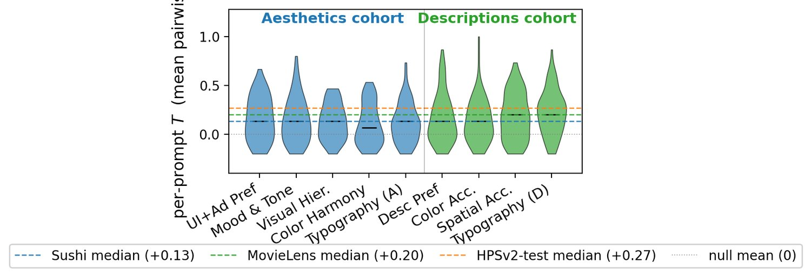
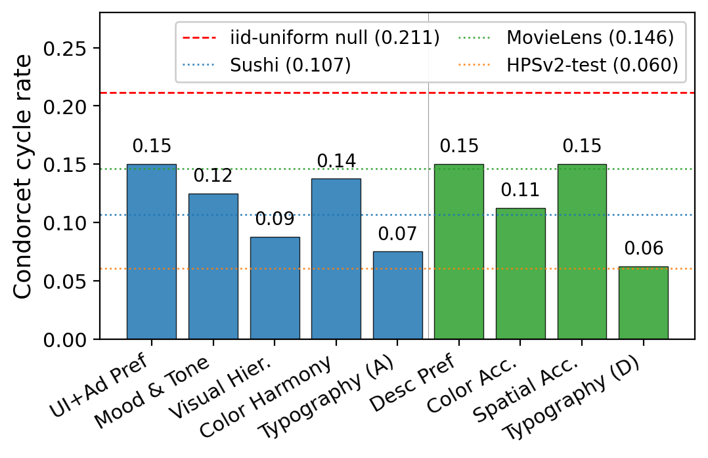
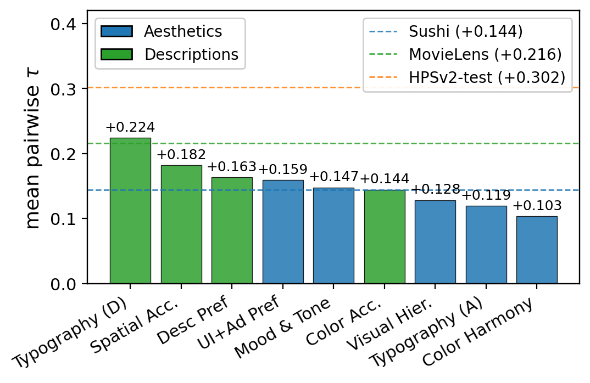
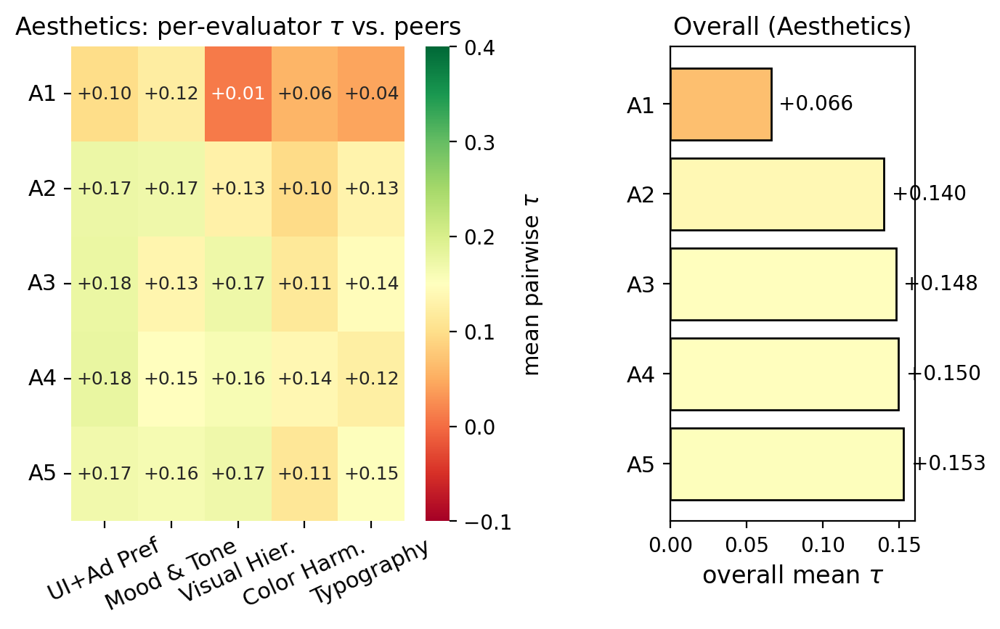
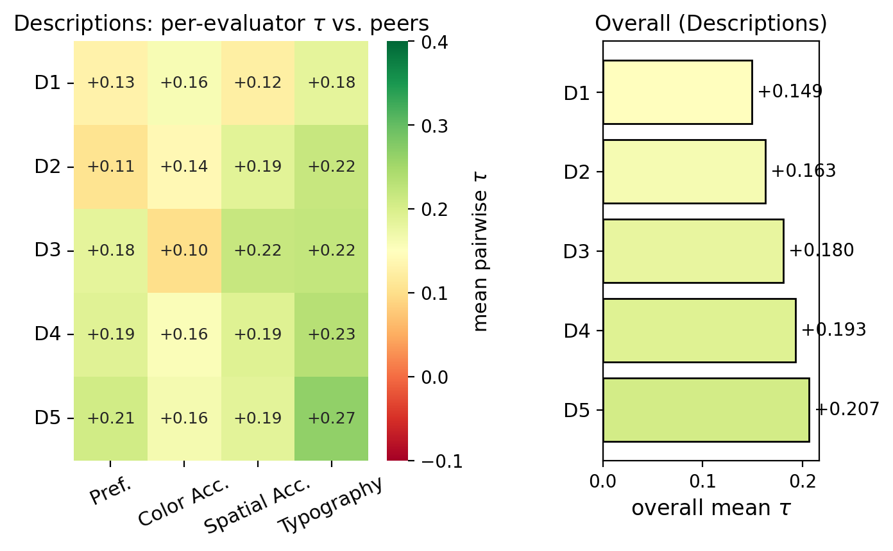

TASTE: A Designer-Annotated Multi-Dimensional Preference Dataset for AI-Generated Graphic Design
TASTE: Designer-Annotated Preference for AI Design
TASTE：面向 AI 设计的、由设计师标注的偏好数据
Text-to-image models now generate graphic design at production scale, yet their supervision still comes primarily from photo-style preference datasets with a single overall verdict per comparison. Designers evaluate designs along several distinct axes (e.g., typography, layout, color harmony) that a single preference label collapses. We release TASTE (Typography, Aesthetics, Spatial, Tone, Etc.), a multi-dimensional preference dataset in which two disjoint cohorts of five professional designers each ranked outputs from four current text-to-image models across nine criteria along with per-image hallucination flags. We pair the dataset with two contributions. First, a criterion-agnostic signal-validation framework based on Kendall’s , majority-vote probability, and Condorcet cycles against exact iid-uniform nulls; the analysis reveals significant but moderate designer agreement, with every TASTE criterion rejecting the random-rater null. Second, we benchmark preference models on TASTE and find that off-the-shelf VLM judges and dedicated T2I scorers fail to reach majority agreement with the designer panel, while a small MLP head trained directly on TASTE substantially narrows the gap to the single-rater ceiling, setting a baseline for future TASTE-trained preference models.
Text-to-image (T2I) models have crossed from research artifact to deployed design tool. Current systems generate UI mockups, posters, ad creatives, and typographic compositions end-to-end and ship them to end users in production design pipelines; a recent survey of AI-driven graphic design [Survey2025DesignAI] catalogues the scope of this shift. Yet these systems are still largely evaluated and optimized using preference signals derived from photographic generation. This creates a misalignment between what models are rewarded for and what downstream design users actually value, potentially favoring photorealistic plausibility over typography, hierarchy, or structural fidelity.
文本到图像（T2I）模型已经从研究原型转变为投入使用的设计工具。当前的系统能端到端地生成 UI 线框、海报、广告创意与字体排版作品，并在生产设计流程中直接交付给终端用户；一项关于 AI 驱动平面设计的近期综述 [Survey2025DesignAI] 记录了这一转变的规模。然而，这些系统的评测与优化在很大程度上仍依赖源自照片式生成的偏好信号。这就造成了模型被奖励的方向与下游设计用户真正看重的东西之间的错位，可能使模型偏向照片级真实感，而忽视字体排版、视觉层级或结构保真度。
The public preference datasets that drive evaluation, reward modeling and preference optimization are collected on photo-style generation rather than on design. HPSv2 and HPSv3 [Wu2023HPSv2, Ma2025HPSv3], Pick-a-Pic [Kirstain2023PickaPic], ImageReward [Xu2023ImageReward], RichHF-18K [Liang2024RichHF], MHP/MPS [Zhang2024MPS], and VisionReward [Xu2026VisionReward] all collect preferences over photo-style outputs. Survey work [Survey2025DesignAI] confirms the gap, and DesignPref [Peng2025DesignPref] describes a UI-design pairwise dataset whose data has not yet been released. A complementary line of recent work targets the structural and task-level side of design: LICA [Hirsch2026LICA] provides 1.55M layered design compositions with structural metadata, and Graphic-Design-Bench [Deganutti2026GDB] evaluates current models on 50 design tasks across layout, typography, infographics, template semantics, and animation. These resources test what models can do; neither records what designers prefer.
驱动评测、奖励建模与偏好优化的公开偏好数据集，都是在照片式生成（而非设计）上收集的。HPSv2 与 HPSv3 [Wu2023HPSv2, Ma2025HPSv3]、Pick-a-Pic [Kirstain2023PickaPic]、ImageReward [Xu2023ImageReward]、RichHF-18K [Liang2024RichHF]、MHP/MPS [Zhang2024MPS] 以及 VisionReward [Xu2026VisionReward] 收集的偏好都针对照片式输出。综述工作 [Survey2025DesignAI] 证实了这一缺口，DesignPref [Peng2025DesignPref] 描述了一个 UI 设计成对比较数据集，但其数据尚未发布。近期还有一条互补的路线关注设计的结构与任务层面：LICA [Hirsch2026LICA] 提供了 1.55M 个带结构元数据的分层设计作品，Graphic-Design-Bench [Deganutti2026GDB] 在版面、字体排版、信息图、模板语义与动画等 50 项设计任务上评估了当前模型。这些资源检验的是模型能做什么，却都没有记录设计师偏好什么。
Sub-dimensional preference remains a missing piece. Photo-style preference is dominated by a small set of objective cues such as anatomical plausibility and prompt alignment, so a single “which is better” label captures most of the signal. Graphic design splits along several partly independent axes including typography rules, visual hierarchy, color harmony, mood and tone, spatial layout fidelity, and description-fidelity criteria of the form does the color requested in the prompt actually appear in the output. A single overall label averages over these axes and loses the per-axis signal. A layout may preserve spatial structure while violating color intent; another may satisfy prompt semantics but break typographic hierarchy. Both could receive the same overall preference label despite failing for different reasons. Work on visual importance and saliency in graphic design supports treating these axes as distinct cognitive processes [Bylinskii2017VisualImportance, Fosco2020Predimportance], and multi-axis benchmarking is standard practice in adjacent modalities, for example VBench and VBench-2.0 in video [Huang2024VBench, Huang2025VBench2].
子维度偏好仍是缺失的一环。照片式偏好由少量客观线索主导，例如解剖结构合理性与提示对齐度，因此单个「哪个更好」的标签就能捕获大部分信号。平面设计则沿着若干彼此部分独立的轴线展开，包括字体排版规则、视觉层级、色彩和谐、情绪与基调、空间版面保真度，以及「提示中要求的颜色是否真的出现在输出中」这类描述保真度准则。单一的整体标签在这些轴线上做平均，从而丢失了逐轴信号：一个版面可能保持了空间结构却违背了色彩意图，另一个可能满足了提示语义却破坏了字体层级。两者可能因完全不同的原因失败，却得到相同的整体偏好标签。关于平面设计中视觉重要性与显著性的研究支持把这些轴视为彼此独立的认知过程 [Bylinskii2017VisualImportance, Fosco2020Predimportance]；在相邻模态中，多轴基准也已是标准做法，例如视频领域的 VBench 与 VBench-2.0 [Huang2024VBench, Huang2025VBench2]。
Building a design-preference dataset is not sufficient on its own: the ratings must encode stable, learnable signal rather than arbitrary ratings. Similar aggregate disagreement can reflect random ratings, a weak shared preference with rater-specific noise, or designer groups with internally consistent but incompatible tastes. We propose a three-part diagnostic for separating these cases: graded agreement (per-prompt Kendall’s ), majority decisiveness (majority-vote probability ), and triadic intransitivity (Condorcet cycle existence). Tested against exact null distributions at , every TASTE criterion rejects the random-rater null on at least two of the three statistics. Three subsampled reference datasets at the same shape (Sushi [Kamishima2003Sushi], MovieLens [Harper2015MovieLens], and the HPSv2 test data [Wu2023HPSv2]) place designer agreement on graphic design between food and movie preferences and below photo-style image-quality preference. Signal level varies across criteria, with typography and spatial accuracy carrying roughly twice the signal of color harmony. Beyond TASTE, we argue that this kind of analysis should be standard practice on any new preference dataset before model training begins, since it answers the prior question of whether learnable signal is present.
构建设计偏好数据集本身并不充分：评分必须编码稳定、可学习的信号，而不是任意的评分。相似的总体分歧可能反映三种情况：随机评分、带有评分者个体噪声的弱共同偏好，或内部一致但彼此口味不相容的设计师群体。我们提出一个三部分诊断来区分这些情形：分级一致性（逐提示的 Kendall ）、多数决断性（多数投票概率 ）与三元非传递性（Condorcet 环的存在性）。在 下与精确零分布做检验，TASTE 的每一项准则都在三个统计量中的至少两个上拒绝了随机评分者零假设。三个同形状的子采样参考数据集（Sushi [Kamishima2003Sushi]、MovieLens [Harper2015MovieLens] 与 HPSv2 测试数据 [Wu2023HPSv2]）表明，设计师在平面设计上的一致度介于食物偏好与电影偏好之间，低于照片式图像质量偏好。信号强度随准则而异，字体排版与空间准确性的信号约为色彩和谐的两倍。除 TASTE 之外，我们认为这类分析应当成为任何新偏好数据集在模型训练开始前的标准流程，因为它回答了「是否存在可学习信号」这一前置问题。
Off-the-shelf systems do not yet read this signal. Across six open-weight VLM judges spanning four families and three dedicated T2I-preference scorers (HPSv2.1, PickScore-v1, LAION-Aesthetic-V2), no pre-trained system exceeds macro agreement with the 5-designer majority on TASTE under a position-bias-corrected protocol [Zheng2023MTBench]. Within the VLM slate, position-bias rate and content sensitivity trade off (Spearman ), so scaling moves the operating point along this frontier rather than to a better one.
现成系统还读不出这种信号。在涵盖四个系列的六个开源权重 VLM 裁判，以及三个专用的 T2I 偏好打分器（HPSv2.1、PickScore-v1、LAION-Aesthetic-V2）中，在位置偏差校正协议 [Zheng2023MTBench] 下，没有任何预训练系统在 TASTE 上与 5 人设计师多数的宏一致率超过 。在 VLM 阵容内部，位置偏差率与内容敏感度相互牵制（Spearman ），因此规模化只是沿这条前沿移动工作点，而不是移向更好的工作点。
TASTE is designed not only as a benchmark, but as a decision layer for design generation systems. Its criterion-level structure enables fine-grained evaluation of model strengths and weaknesses, allowing practitioners to select or route among generators based on task-specific priorities (e.g., typography fidelity, spatial accuracy, or color control) rather than relying on a single aggregate preference score. This same structure provides supervision for training preference judges, reward models, and alignment objectives that optimize for specific design dimensions, enabling more controllable and designer-aligned generation.
TASTE 的定位不止于基准，它还可以作为设计生成系统的决策层。其准则级结构支持对模型长短处做细粒度评估，让实践者依据任务优先级（例如字体排版保真度、空间准确性或色彩控制）在生成器之间做选择与路由，而不必依赖单一的总分。同一结构也为训练偏好裁判、奖励模型与对齐目标提供了监督，使优化可以针对特定设计维度进行，从而实现更可控、更贴合设计师的生成。
Hence, our work makes the following contributions:
综上，本文的贡献如下：
We release TASTE11 1 Code: https://github.com/purvanshi-lica/taste. Data: https://huggingface.co/datasets/purvanshi/TASTE. (Typography, Aesthetics, Spatial, Tone, Etc.), a designer-annotated preference dataset for AI-generated graphic design recording one rating per criterion across nine criteria, with ten professional designers ranking outputs from four current T2I models (1,600 ratings per criterion, plus hallucination flags on overall-preference cohorts). Both pairwise comparisons and derived 4-way rankings are released.
1. 我们发布 TASTE11 1 代码：https://github.com/purvanshi-lica/taste。数据：https://huggingface.co/datasets/purvanshi/TASTE。（Typography, Aesthetics, Spatial, Tone, Etc.），这是一个面向 AI 生成平面设计的、由设计师标注的偏好数据集，在九项准则上逐准则记录一次评分，由十位专业设计师对四个当前 T2I 模型的输出排序（每准则 1,600 次评分，另在整体偏好队列上标注幻觉标记）。成对比较与推导出的四路排序均一并发布。
We introduce a criterion-agnostic diagnostic framework for validating preference-signal quality in new datasets, based on graded agreement, majority decisiveness, and triadic intransitivity. Applied with cross-domain anchors from Sushi, MovieLens, and HPSv2-test at the same shape, every TASTE criterion rejects the random-rater null and designer agreement on graphic design sits between subjective-taste and photo-quality regimes.
2. 我们提出一个与准则无关的诊断框架，用于检验新数据集中偏好信号的质量，基于分级一致性、多数决断性与三元非传递性。结合来自 Sushi、MovieLens 与 HPSv2-test 的同形状跨域锚点，TASTE 的每一项准则都拒绝了随机评分者零假设，且设计师在平面设计上的一致度落在主观口味与照片质量两种机制之间。
We benchmark preference models on TASTE. Nine pre-trained systems, three dedicated T2I-preference scorers (HPSv2.1, PickScore-v1, LAION-Aesthetic-V2) and six open-weight VLMs prompted as judges across four families and an order-of-magnitude range in active parameter count, all fall below macro agreement with the 5-designer majority, and scaling within the VLM slate does not close the gap. A small MLP head trained directly on TASTE reaches pairwise accuracy, approaching the single-rater ceiling and setting a baseline for future TASTE-trained preference models.
3. 我们在 TASTE 上基准测试了偏好模型。九个预训练系统——三个专用 T2I 偏好打分器（HPSv2.1、PickScore-v1、LAION-Aesthetic-V2）与六个被提示充当裁判的开源 VLM（涵盖四个系列，活跃参数量跨越一个数量级）——与 5 人设计师多数的一致率全部低于 宏一致率，且在 VLM 阵容内部扩大规模并不能弥合差距。一个直接在 TASTE 上训练的小型 MLP 头达到了 的成对准确率，接近 的单一评分者上限，为未来基于 TASTE 训练的偏好模型设定了基线。
LICA [Hirsch2026LICA] releases 1.55M layered design compositions with structural metadata covering text, image, vector, and group elements. Graphic-Design-Bench [Deganutti2026GDB] builds on LICA to evaluate current models on 50 understanding-and-generation tasks across layout, typography, infographics, template semantics, and animation. These two resources cover the structural and task sides of graphic-design AI but record no human preferences. A recent survey [Survey2025DesignAI] maps the broader landscape and flags multi-rater design preference data as missing. Other works [Bylinskii2017VisualImportance, Fosco2020Predimportance] provide foundational work on visual-importance prediction across graphic design types and motivate sub-dimensional analysis of design quality. TASTE positions on top of this stack as the human-preference layer.
LICA [Hirsch2026LICA] 发布了 1.55M 个分层设计作品，带有覆盖文本、图像、矢量与组元素的结构元数据。Graphic-Design-Bench [Deganutti2026GDB] 在 LICA 之上构建，在版面、字体排版、信息图、模板语义与动画等 50 项理解与生成任务上评估当前模型。这两项资源覆盖了平面设计 AI 的结构与任务侧面，但没有记录人类偏好。一项近期综述 [Survey2025DesignAI] 描绘了更广阔的图景，并指出多评分者设计偏好数据是缺失的。其他工作 [Bylinskii2017VisualImportance, Fosco2020Predimportance] 为跨平面设计类型的视觉重要性预测奠定了基础，并启发了对设计质量做子维度分析。TASTE 位于这一栈的顶层，充当人类偏好层。
DesignPref [Peng2025DesignPref] is the closest in spirit to TASTE. It collects 12k pairwise UI design comparisons from 20 designers with identity-linked annotations and reports Krippendorff on a single overall preference label. TASTE differs along three concrete axes: it covers nine sub-dimensional criteria rather than a single overall label, it is collected over four current text-to-image generators rather than a UI-only context, and the data is publicly released (DesignPref’s data has not been released publicly at submission time). TASTE is therefore complementary to DesignPref rather than substitutive: a researcher interested in the broad design domain, with sub-dimensional generation preference, would use TASTE, and one interested in single-label personalised UI preference would use DesignPref once it releases.
DesignPref [Peng2025DesignPref] 在精神上与 TASTE 最接近。它从 20 位设计师处收集了 12k 条 UI 设计成对比较，带有与身份关联的标注，并在单一整体偏好标签上报告 Krippendorff 。TASTE 在三个具体方面与之不同：它覆盖九项子维度准则而非单一整体标签；数据采集自四个当前的文本到图像生成器，而非仅限 UI 场景；数据公开发布（DesignPref 的数据在投稿时尚未公开）。因此 TASTE 与 DesignPref 互补而非相互替代：关注广义设计域、需要子维度生成偏好的研究者会用 TASTE；而关注单一标签的个性化 UI 偏好的研究者则会在 DesignPref 发布后使用它。
HPSv2 and HPSv3 [Wu2023HPSv2, Ma2025HPSv3] use pairwise preference on photo-realistic generation, with one annotator per pairwise comparison in the training split and a small multi-rater test split. Pick-a-Pic [Kirstain2023PickaPic] collects pairwise preferences from real users in the wild. ImageReward [Xu2023ImageReward] extends to per-prompt -way rankings with between and but does not preserve per-rater identity in the public release. GenAI-Bench [Lin2024GenAIBench] provides Likert ratings from three annotators per item across six T2I models. ImagenWorld [Sun2026ImagenWorld] stress-tests image generation with explainable human evaluation on real-world tasks.
HPSv2 与 HPSv3 [Wu2023HPSv2, Ma2025HPSv3] 在照片真实感生成上使用成对偏好，训练划分中每个成对比较配一名标注者，另有一个小规模多评分者测试划分。Pick-a-Pic [Kirstain2023PickaPic] 在真实场景用户中收集成对偏好。ImageReward [Xu2023ImageReward] 扩展到逐提示的 路排序， 介于 与 之间，但公开版本未保留评分者身份。GenAI-Bench [Lin2024GenAIBench] 提供每条目三名标注者、跨六个 T2I 模型的 Likert 评分。ImagenWorld [Sun2026ImagenWorld] 以面向真实任务的可解释人工评测对图像生成做压力测试。
RichHF-18K [Liang2024RichHF] adds per-image scores for plausibility, alignment, and aesthetics on Pick-a-Pic outputs. MHP/MPS [Zhang2024MPS] collect approximately 918k pairwise judgments on four orthogonal dimensions. VisionReward [Xu2026VisionReward] extends this to a binary checklist of around 63 sub-dimensional questions. In an adjacent modality, VBench [Huang2024VBench] and VBench-2.0 [Huang2025VBench2] establish multi-axis decomposition as the standard evaluation pattern for video generation, and motivate the same pattern in still imagery. All five target photo-realistic or generic content rather than design. E-commerce poster evaluation is closer to design but evaluates AI judges rather than collecting designer preferences [Ecomiq2026].
RichHF-18K [Liang2024RichHF] 在 Pick-a-Pic 的输出上增加了合理性、对齐度与美学的逐图评分。MHP/MPS [Zhang2024MPS] 在四个正交维度上收集了约 918k 条成对判断。VisionReward [Xu2026VisionReward] 进一步扩展为约 63 个子维度问题的二元清单。在相邻模态中，VBench [Huang2024VBench] 与 VBench-2.0 [Huang2025VBench2] 把多轴分解确立为视频生成评测的标准范式，并启发了在静态图像上采用同样范式。这五者都针对照片真实感或通用内容，而非设计。电商海报评测更接近设计，但它评估的是 AI 裁判，而非收集设计师偏好 [Ecomiq2026]。
AGIQA-3K [Li2023AGIQA3K], AIGIQA 20K [Li2024AIGIQA20K], and AGIN [Chen2024AGIN] collect Mean Opinion Scores on AI-generated images. These target perceptual quality and naturalness rather than design preference, and their public releases either aggregate per-image scores or use a different statistical shape, preventing direct overlay on our histograms.
AGIQA-3K [Li2023AGIQA3K]、AIGIQA 20K [Li2024AIGIQA20K] 与 AGIN [Chen2024AGIN] 收集了 AI 生成图像的平均意见分。这些工作针对的是感知质量与自然度，而非设计偏好；其公开版本要么只给出逐图聚合分数，要么统计形状不同，无法直接叠加到我们的直方图上。
Sushi [Kamishima2003Sushi] and MovieLens [Harper2015MovieLens] are canonical multi-rater preference datasets in the food and movie domains. Both can be subsampled to a shape and bracket subjective taste-based agreement. Our statistical pipeline builds on Mallows permutation models [Mallows1957], the Bradley–Terry [BradleyTerry1952] and Plackett–Luce [Plackett1975, Luce1959] parametric formulations, Kendall’s [Kendall1938], and Krippendorff’s [Krippendorff2004alpha, Krippendorff2018].
Sushi [Kamishima2003Sushi] 与 MovieLens [Harper2015MovieLens] 是食物与电影域中经典的多评分者偏好数据集，二者都可子采样到 形状，并为基于主观口味的一致度提供了上下界。我们的统计流程建立在 Mallows 排列模型 [Mallows1957]、Bradley–Terry [BradleyTerry1952] 与 Plackett–Luce [Plackett1975, Luce1959] 的参数化形式、Kendall [Kendall1938] 以及 Krippendorff [Krippendorff2004alpha, Krippendorff2018] 之上。
We evaluate four current text-to-image models: FLUX.2 max [BlackForest2024Flux], GPT Image 1.5 [OpenAI2024DALLE], Nano Banana 2 [Google2024Imagen], and Seedream 5.0 Lite [Bytedance2024Seedream]. Generators are presented to evaluators behind blind code-names. The mapping from code-name to model is recorded but not shown to the rater, which prevents brand-anchoring effects.
我们评估四个当前的文本到图像模型：FLUX.2 max [BlackForest2024Flux]、GPT Image 1.5 [OpenAI2024DALLE]、Nano Banana 2 [Google2024Imagen] 与 Seedream 5.0 Lite [Bytedance2024Seedream]。生成器以盲测代号呈现给评测者，代号到模型的映射被记录下来但不展示给评分者，以避免品牌锚定效应。
We recruited two disjoint cohorts of professional designers, an Aesthetics cohort of 5 designers and a Descriptions cohort of 5 different designers. We refer to evaluators within each cohort as Designer A through Designer E to preserve anonymity in the analyses that follow. Each evaluator within a cohort sees every prompt batch in that cohort, so per-rater identity carries across the cohort’s sub-dimensions. We paid designers hourly market rates and did not disclose the statistical analyses applied to their judgments.
我们招募了两个互不重叠的专业设计师队列：由 5 位设计师组成的 Aesthetics（美学）队列，与由另 5 位设计师组成的 Descriptions（描述）队列。为在后续分析中保持匿名，我们把每个队列内的评测者称为设计师 A 至设计师 E。队列内的每位评测者都会看到该队列的每一批提示，因此评分者身份在该队列的各子维度间保持一致。我们按市场时薪向设计师支付报酬，且未向他们披露将对其判断施加的统计分析。
Nine ranking sub-dimensions are collected, organised into the two cohorts (Table 1). The criteria were not chosen by the authors but surfaced from pilot interviews with the same pool of professional designers who later annotated the data; the exact interview format is documented in §3.4. The Aesthetics cohort covers an overall preference (intent-grounded) and four sub-criteria the designers consistently flagged as separate cognitive processes (mood and tone, visual hierarchy, color harmony, typography). The Descriptions cohort covers overall preference and three description-fidelity sub-criteria that designers identified as verifiable against the prompt (color accuracy, spatial accuracy, typography). The two typography criteria are distinct: Aesthetics Typography rates the typographic craft of the rendered design (font selection, spacing, sizing hierarchy, alignment), while Descriptions Typography rates whether the text demanded by the prompt is rendered correctly (presence, spelling, fit to the brief’s directions). Each sub-dimension was rated on a separate, disjoint set of 80 prompts. This design isolates per-dimension signal at the cost of preventing within-rater within-prompt cross-dimensional comparison.
我们收集了九个排序子维度，组织为两个队列（表 1）。这些准则并非由作者选定，而是从对同一批专业设计师（他们后来也参与了数据标注）的先导访谈中浮现出来的；访谈的确切形式记录在 §3.4。Aesthetics 队列涵盖一个整体偏好（以意图为依据）与四个被设计师一致认定为独立认知过程的子准则（情绪与基调、视觉层级、色彩和谐、字体排版）。Descriptions 队列涵盖整体偏好与三个设计师认为可对照提示核验的描述保真度子准则（色彩准确性、空间准确性、字体排版）。两个字体排版准则彼此不同：Aesthetics Typography 评价渲染成品的字体工艺（字体选择、间距、字号层级、对齐），而 Descriptions Typography 评价提示所要求的文字是否被正确渲染（是否存在、拼写是否正确、是否符合简报的方向）。每个子维度都在一组彼此独立、互不重叠的 80 条提示上评分。这一设计以牺牲「同一评分者、同一提示下跨维度比较」为代价，隔离出了逐维度信号。
For each prompt the rater performs the pairwise comparisons of the four generator outputs, presented blind side by side. The 6 pairwise judgments per (prompt, evaluator) tuple are then aggregated into a strict 4-way ranking by the collection pipeline; the exact aggregation procedure is documented in §3.4. Each (prompt, evaluator) cell of the released data is therefore both a set of 6 pairwise comparisons and a derived 4-way rank, and the analyses in §6 use the derived rank.
对每条提示，评分者对四个生成器输出执行 次成对比较，以盲测方式并排呈现。每个（提示，评测者）元组的 6 次成对判断随后由采集流程聚合为一个严格的四路排序，聚合的确切步骤记录在 §3.4。因此，所发布数据中每个（提示，评测者）单元既是 6 次成对比较的集合，也是一个推导出的四路排序；§6 的分析使用的是推导出的排序。
For the two overall-preference cohorts (Aesthetic Preference and Descriptions Preference, prompts in total), each evaluator additionally flags every generator’s image as No, Minor, or Major hallucination, encoded as . This yields ordinal flags per cohort, distributed across three classes rather than a low-prevalence binary: roughly No, Minor, and Major in both cohorts. Inter-rater agreement is modest. Krippendorff’s with an ordinal distance metric reaches on Aesthetics and on Descriptions, slightly below the measured on the same cohorts’ rankings. The disagreement is concentrated rather than diffuse: on of Aesthetics items and of Descriptions items, raters split only between No and Minor, while only split solely between Minor and Major. Per-evaluator Major rates span to , reflecting per-rater calibration drift rather than disagreement on which items count as severe failures. We use these flags only as a documented dataset feature in this paper and do not filter the ranking data with them. Tightening the No–Minor rubric, possibly through automated VQA-style probes in the spirit of recent T2I hallucination evaluation work [Lim2025IHallA, Liu2025HallucinationSurvey], is a natural follow-on for the next collection round.
对于两个整体偏好队列（Aesthetic Preference 与 Descriptions Preference，共 条提示），每位评测者还要额外把每个生成器的图像标记为无幻觉（No）、轻微幻觉（Minor）或严重幻觉（Major），编码为 。这为每个队列产生 个序数标记，分布在三个类别上而非低发生率的二元标记：两个队列中大致为 个 No、 个 Minor 与 个 Major。评分者间一致度不高。采用序数距离度量的 Krippendorff 在 Aesthetics 上达到 ，在 Descriptions 上达到 ，略低于在同一队列排序上测得的 。分歧是集中的而非弥散的：在 Aesthetics 的 条目与 Descriptions 的 条目上，评分者只在 No 与 Minor 之间分歧，而仅有 的条目只在 Minor 与 Major 之间分歧。各评测者的 Major 率介于 到 之间，反映的是逐评分者的校准漂移，而非对「哪些条目算严重失败」的分歧。本文仅把这些标记作为数据集的一项已记录特征使用，并未用它们过滤排序数据。收紧 No–Minor 的判定细则（可能借助受近期 T2I 幻觉评测工作 [Lim2025IHallA, Liu2025HallucinationSurvey] 启发的自动化 VQA 式探针）是下一轮采集的自然延伸。
We hereby describe the data curation and annotation protocol.
下面描述数据整理与标注协议。
Designers were recruited through Contra, a professional network of 1.5M creative professionals. Participants comprised experienced graphic designers spanning brand identity, visual systems, web and product design, illustration, and marketing design, with substantial commercial portfolios including work for established technology companies, global brands, and high-growth startups. Designers were eligible for participation based on previous engagement with Contra Labs research studies or by passing the Contra Labs Network eligibility screener, a component of the Contra Labs application completed by all new members. From this pool, selected participants had demonstrated professional graphic design experience through their Contra profiles and prior client work.
设计师通过 Contra 招募，这是一个拥有 1.5M 创意专业人士的专业网络。参与者是经验丰富的平面设计师，覆盖品牌识别、视觉系统、网页与产品设计、插画与营销设计，拥有充实的商业作品集，包括为成熟科技公司、全球品牌与高速增长初创企业所做的项目。设计师的参与资格基于此前参与过 Contra Labs 研究，或通过 Contra Labs Network 资格筛选问卷（所有新成员在申请 Contra Labs 时都要完成这一环节）。从这个人才池中选出的参与者，都在其 Contra 档案与以往客户工作中展现出专业平面设计经验。
The 10 participants in this study were located in the US, Portugal, Italy, France, Spain, Pakistan, Armenia, and Jordan. The primary working language of all participants is English. Self-reported specialties, aside from graphic design, include brand design, art direction, advertising design, and AI visual art, with years of experience ranging from 4–10 years.
本研究的 10 位参与者分布在美国、葡萄牙、意大利、法国、西班牙、巴基斯坦、亚美尼亚与约旦。所有参与者的主要工作语言为英语。除平面设计外，自报的专长还包括品牌设计、艺术指导、广告设计与 AI 视觉艺术，从业年限从 4 年到 10 年不等。
A series of small-scale pilot studies was conducted to refine the questionnaire, study parameters, and evaluated sub-dimensions. The final cohort structure was developed collaboratively between LICA and Contra Labs, informed by prior findings from the Contra Labs Human Creativity Benchmark (HCB) research and successive pilot evaluations. Once the methodology was finalized, the study was conducted at scale.
我们开展了一系列小规模先导研究，以打磨问卷、研究参数与被评估的子维度。最终的队列结构由 LICA 与 Contra Labs 协作开发，参考了 Contra Labs 人类创造力基准（HCB）研究的既有发现与连续的先导评估。方法定稿后，研究便大规模展开。
All prompts represented in this study were tied to real marketplace outcomes, tied to common deliverables for the creative professional community on Contra. This study focused on prompts from the following subcategories, all sourced from the LICA Dataset [Hirsch2026LICA]: Presentations, flyers, instagram posts, social media, print products, cards & invitations, posters, art & design, and logo. A single set of prompts were randomly selected from these categories, proportional to their representation in the LICA dataset.
本研究中的所有提示都对应真实的市场交付物，贴合 Contra 创意专业人士社区常见的交付类型。本研究聚焦于以下子类别的提示，全部取自 LICA 数据集 [Hirsch2026LICA]：演示文稿、传单、Instagram 帖子、社交媒体、印刷品、卡片与邀请函、海报、艺术与设计，以及 logo。我们从这些类别中随机抽取一组提示，抽取比例与它们在 LICA 数据集中的占比成正比。
Each prompt in the LICA dataset has three portions. First, User Intent, a description of the purpose and audience of the output. The second portion was Description, a literal description of the layout and elements of the output. The third portion was Aesthetics, a description of the stylistic qualities and elements of the output. The User Intent and Description portions were taken to make one prompt set for the Description cohort. The same User Intent and corresponding Aesthetics portion was taken to make the second prompt set for the Aesthetics cohort. The participants were randomly divided across these two categories, with 5 designers participating per run.
LICA 数据集中的每条提示包含三个部分。第一部分是 User Intent（用户意图），描述输出的目的与受众。第二部分是 Description（描述），对输出的版面与元素做字面描述。第三部分是 Aesthetics（美学），描述输出的风格特质与元素。我们取 User Intent 与 Description 两部分，构成 Description 队列的一套提示；取同样的 User Intent 与对应的 Aesthetics 部分，构成 Aesthetics 队列的第二套提示。参与者被随机分配到这两类中，每次运行 5 位设计师参与。
The model versions used for these evaluations were: Nano Banana 2 (released February 26, 2026), Flux.2 [max] (released December 16, 2025), GPT Image 1.5 (released December 16, 2025), and Seedream 5.0 Lite (released February 13, 2026). All outputs were generated within the Contra evaluation environment using fal.ai and checked to ensure the generation did not fail and the aspect ratio was consistent before presenting to designers.
本次评测所用的模型版本为：Nano Banana 2（2026 年 2 月 26 日发布）、Flux.2 [max]（2025 年 12 月 16 日发布）、GPT Image 1.5（2025 年 12 月 16 日发布）与 Seedream 5.0 Lite（2026 年 2 月 13 日发布）。所有输出在 Contra 评测环境中通过 fal.ai 生成，并在呈现给设计师前检查生成是否失败、长宽比是否一致。
The pairwise comparison was conducted in Contra’s evaluation environment. For each set of one prompt and the corresponding four outputs, participants were shown the prompt first with a twenty-second countdown to keep them on the prompt screen. After twenty seconds, or when participants finished reading, they were able to click “I’m Ready”, which moved them to the pairwise comparison screen. On this screen, they saw the prompt and two images at a time, which they were able to click and zoom into if needed. For selection, they clicked one of two options, which read “I prefer left” or “I prefer right”, and then the next pair of images in the set was presented. They continued this selection until their ranking was settled. There was no timer associated with the selection, but participants were advised to take approximately 2 minutes per evaluation, after reading the prompt. The opening context paragraph shown to designers at the start of every session is reproduced verbatim in Appendix C.
成对比较在 Contra 的评测环境中进行。对于每组「一条提示 + 对应的四个输出」，参与者先看到提示，并伴有 20 秒倒计时以让他们停留在提示页面。20 秒后，或参与者阅读完毕后，他们可以点击「I’m Ready」（我准备好了），进入成对比较界面。在该界面上，他们一次看到提示与两张图片，需要时可以点击放大。选择时，他们点击两个选项之一，分别为「I prefer left」（我更倾向左边）与「I prefer right」（我更倾向右边），随后呈现该组中的下一对图像。他们持续选择，直到排序确定。选择环节没有计时，但建议参与者在阅读提示后每项评测大约花 2 分钟。每场会话开始时展示给设计师的开场说明段落，原文照录于附录 C。
For each (prompt, evaluator) tuple, we collapsed the 6 binary pairwise judgments into a strict 4-way ranking by fitting a Bradley-Terry model and ordering responses by descending estimated strength. We observed no intransitive triples in the released data.
对于每个（提示，评测者）元组，我们通过拟合 Bradley-Terry 模型并按估计强度降序排列，把 6 次二元成对判断压缩为一个严格的四路排序。在所发布数据中我们没有观察到非传递三元组。
Designers were advised to complete the hallucination flag with major hallucinations counting as anything outside the scope of the prompt request and unrelated to the prompt. Minor hallucinations counted as elements that were changed or different from intention but still related, and no hallucinations meant that all elements in the design were logically derived from the prompt.
设计师被告知按如下方式填写幻觉标记：严重幻觉指任何超出提示请求范围、与提示无关的内容；轻微幻觉指被改动或偏离意图但仍相关的元素；无幻觉指设计中的所有元素都能从提示合乎逻辑地推导出来。
Designers were paid a flat project fee that averaged approximately $90 per hour. Designers in the Description cohort completed 4 evaluations, totalling about 13 hours each (task familiarization and evaluation time) spread over a week-long period. Designers in the Aesthetics cohort completed 5 evaluations, totalling 16 hours each over the same period. All designers gave informed consent through a project contract that documented the use of the collected data for research and product purposes, including external release. The study was conducted as paid market research under Contra Labs’ standard research consent procedure and does not fall under the scope of an academic IRB; designers were free to withdraw at any point without penalty.
设计师按项目固定费用支付，平均约为每小时 90 美元。Description 队列的设计师完成了 4 次评测，每人总计约 13 小时（含任务熟悉与评测时间），分布在为期一周的时段内。Aesthetics 队列的设计师完成了 5 次评测，同一时段内每人 16 小时。所有设计师都通过项目合同给出了知情同意，合同中说明了所采集数据将用于研究与产品目的，包括对外发布。本研究作为有偿市场调研，依照 Contra Labs 的标准研究同意流程开展，不属于学术 IRB 的管辖范围；设计师可在任何时候无责退出。
| Cohort | Sub-dimension | Designers | # prompts |
|---|---|---|---|
| Aesthetics | UI+Ad Preference (holistic) | 5 (cohort A) | 80 |
| Aesthetics | Mood and Tone Match | 5 (cohort A) | 80 |
| Aesthetics | Visual Hierarchy | 5 (cohort A) | 80 |
| Aesthetics | Color Harmony | 5 (cohort A) | 80 |
| Aesthetics | Typography | 5 (cohort A) | 80 |
| Descriptions | Preference (holistic) | 5 (cohort B) | 80 |
| Descriptions | Color Accuracy | 5 (cohort B) | 80 |
| Descriptions | Spatial Accuracy | 5 (cohort B) | 80 |
| Descriptions | Typography | 5 (cohort B) | 80 |
表 1：队列结构与逐子维度的提示数量。两个队列使用互不重叠的专业设计师池，每个子维度各用互不重叠的 80 条提示批次。每个（提示，评测者）单元都是对四个生成器输出的严格四路排序，每子维度给出 次评分。

图 1：各 TASTE 子维度的逐提示 分布（10 对评测者之间成对 Kendall 的均值），水平线标出三个跨域参考锚点的 中位数。Aesthetics 子维度用蓝色表示，Descriptions 用绿色。全部九个子维度都紧邻 Sushi（食物）与 MovieLens（电影）的中位数，远低于限定在其前 4 个生成模型上的 HPSv2-test 的中位数，这说明设计偏好落在主观口味机制而非图像质量机制中。
Before treating TASTE as training data for a preference model, we test whether the ratings carry meaningful preference signal. A dataset of random rankings has the same shape as TASTE and would survive any conventional descriptive report; the relevant test is whether the observed agreement exceeds what independent uniform raters would produce. We adopt three complementary signal tests, each addressing a different mode of disagreement. Formal definitions, support sets, and null PMFs are tabulated in Appendix A; the body uses each statistic intuitively.
在把 TASTE 当作偏好模型的训练数据之前，我们先检验这些评分是否携带有效的偏好信号。一份随机排序数据集与 TASTE 形状相同，也能通过任何常规的描述性报告；真正相关的检验是所观察到的一致度是否超过独立均匀评分者所能产生的水平。我们采用三项互补的信号检验，每一项针对不同的分歧模式。形式化定义、支撑集与零假设 PMF 列于附录 A；正文只直观地使用各个统计量。
Kendall’s summarises rank correlation between rater pairs. For a single prompt with raters we compute one Kendall per rater pair and report the per-prompt mean . if all raters agree exactly, under random ranking, and if raters systematically disagree. At the support of is finite and its iid-uniform null PMF has a closed form, which lets us test the full histogram of per-prompt values against the null rather than only its mean.
Kendall 概括评分者对之间的排序相关性。对于有 位评分者的单条提示，我们对每对评分者计算一个 Kendall ，并报告逐提示均值 。若所有评分者完全一致则为 ，随机排序下为 ，若评分者系统性相左则为 。在 下， 的支撑集有限，其 iid 均匀零假设 PMF 有闭式表达，这使我们可以拿逐提示 值的完整直方图（而不只是其均值）对零假设做检验。
Majority-vote probability asks how often a clear winner emerges between two items. For each pair of generator outputs we count how many of the raters place above , call this count , and report . At this takes values in . Larger means a sharper majority on a given pair. Under iid-uniform raters, follows the symmetric-folded distribution.
多数投票概率 考察两个条目之间多频繁地出现明确赢家。对于每对生成器输出 ，我们统计 位评分者中有多少把 排在 之上，记该计数为 ，并报告 。在 下其取值落在 。 越大，表示某一对上的多数越分明。在 iid 均匀评分者下， 服从对称折叠的 分布。
The Condorcet cycle indicator distinguishes shared-ordering disagreement from factional disagreement. For each prompt we ask whether the majority pairwise preferences across the four generator outputs contain an intransitive triple (, , ). A single weak shared preference order with rater-specific noise on top suppresses cycles below the iid rate; a mixture of factions with internally consistent but mutually orthogonal preferences elevates cycles above the iid rate. At the iid-uniform cycle rate is by Monte Carlo, and we test observed cycle counts against this rate with a binomial test.
Condorcet 环指示量用于区分「共同排序下的分歧」与「派系式分歧」。对每条提示，我们考察四个生成器输出上的多数成对偏好是否包含非传递三元组（, , ）。单一的弱共同偏好排序叠加评分者个体噪声，会把环率压到 iid 水平之下；而由内部一致但彼此正交的偏好混合而成的派系，会把环率抬到 iid 水平之上。在 下，iid 均匀的环率经蒙特卡洛为 ，我们用二项检验把观察到的环计数与该比率做比较。
Why the three statistics together. Kendall’s alone does not separate shared-ordering noise from factional disagreement, because both can produce similar mean . alone cannot diagnose triadic intransitivity. The cycle indicator alone gives no information about graded agreement. Together the three test the same null (iid-uniform raters) along three independent axes; rejection on any one is evidence of preference signal, and the pattern of rejection across the three discriminates between the three competing stories about what causes the observed disagreement (§1). We argue this signal-check procedure should be standard practice for any new preference dataset before training begins.
为什么需要三个统计量并用。Kendall 单独无法区分共同排序噪声与派系式分歧，因为二者可能产生相近的 均值。 单独无法诊断三元非传递性。环指示量单独又不提供关于分级一致性的信息。三者合起来沿三条独立的轴检验同一个零假设（iid 均匀评分者）；在任一轴上被拒绝即为存在偏好信号的证据，而三个轴上的拒绝模式则能区分造成所观察分歧的三种竞争性解释（§1）。我们认为这一信号检验流程应当成为任何新偏好数据集在训练开始前的标准做法。
To position TASTE against existing preference data we construct three reference anchors at the same shape. Each anchor is a larger ranking dataset, and for each synthetic prompt we draw items and raters at random and re-rank to per rater on the selected subset. The resulting rank matrix is processed by the same pipeline. Pooling many such synthetic prompts gives a reference distribution at the same support as TASTE.
为了把 TASTE 与既有偏好数据对照定位，我们构建了三个同 形状的参考锚点。每个锚点都是一个更大的排序数据集；对每条合成提示，我们随机抽取 个条目与 位评分者，并在所选子集上按每位评分者重新排到 。得到的 排序矩阵由同一流程处理。把大量此类合成提示汇集起来，就得到与 TASTE 具有相同支撑集的参考分布。
Sushi [Kamishima2003Sushi] contains preference rankings of sushi items by approximately 5,000 users. We draw 50 bootstrap iterations of panels with random 4-item subsets per panel, totalling 20,000 samples.
Sushi [Kamishima2003Sushi] 包含约 5,000 名用户对 种寿司的偏好排序。我们抽取 50 轮 bootstrap 迭代，每轮含 个评分小组、每个小组 个随机 4 条目子集，总计 20,000 个样本。
MovieLens [Harper2015MovieLens] contains -to- ratings of films by tens of thousands of users. We restrict to the top-100 most-rated movies, draw users with sufficient overlap, and emit 50 bootstrap iterations of samples each.
MovieLens [Harper2015MovieLens] 包含数万名用户对电影的 到 评分。我们限定在评分次数最多的前 100 部电影上，抽取重叠足够多的用户，输出 50 轮 bootstrap 迭代，每轮 个样本。
The HPSv2 test split [Wu2023HPSv2] contains 400 prompts with 10 fixed annotators per prompt and 9 generative-model images per prompt, plus a COCO real image on 100 of the prompts. To make a fair generated-only comparison at we exclude the COCO real image and identify the top-4 generative models by mean aggregated rank across the 400 prompts. Indices form a clean cluster with mean ranks of to , separated by a gap of more than two ranks from the next-best (index 0, mean rank ). We hold these four model indices fixed across all prompts and bootstrap 50 random 5-of-10 rater subsets, giving samples at the matching shape.
HPSv2 测试划分 [Wu2023HPSv2] 包含 400 条提示，每条提示有 10 位固定标注者与 9 个生成模型的图像，其中 100 条提示另有一张 COCO 真实图像。为在 下做公平的「仅生成图像」比较，我们剔除 COCO 真实图像，并按 400 条提示上的平均聚合排名识别出前 4 个生成模型。索引 构成一个干净的簇，平均排名在 到 之间，与次优者（索引 0，平均排名 ）相隔两个以上名次。我们在所有提示上固定这四个模型索引，并对 10 位评分者 bootstrap 50 个随机 5 人子集，得到匹配形状下的 个样本。
| Anchor () | median | mean pair- | mean | cycle rate |
|---|---|---|---|---|
| Sushi (20,000) | ||||
| MovieLens (24,000) | ||||
| HPSv2-test top-4 (20,000) | ||||
| iid-uniform null |
表 2： 下参考锚点的描述性统计。三个锚点在每个统计量上都高于 iid 均匀零假设。在剔除弱生成器后，HPSv2-test（图像质量）显示出最强的一致性信号，而 Sushi 与 MovieLens 则界定了主观口味机制的范围。
The signal check from §4 asks the prior question of whether TASTE carries preference signal. Chi-squared GOF tests on the per-prompt histogram and the histogram against the exact iid-uniform null reject in every TASTE criterion at on at least one of the two statistics, and in most criteria on both. These rejections survive any reasonable multiple-comparison correction (Bonferroni across tests requires , comfortably exceeded by the observed magnitudes). The cycle indicator adds a third axis on which agreement is detectable; we treat it separately in §6.3 because it discriminates between two kinds of structured agreement rather than between agreement and noise. Per-criterion summary statistics appear in Table 3.
§4 的信号检验回答了「TASTE 是否携带偏好信号」这一前置问题。对逐提示 直方图与 直方图针对精确 iid 均匀零假设做卡方拟合优度检验，结果在 水平上，TASTE 的每一项准则都在两个统计量中的至少一个上被拒绝，多数准则在两个上都被拒绝。这些拒绝在任何合理的多重比较校正下都成立（跨 次检验的 Bonferroni 校正要求 ，而观察到的量级远超这一要求）。环指示量补上了第三条可检测一致性的轴；我们在 §6.3 中单独处理它，因为它区分的是两类结构化一致性，而非一致性与噪声。逐准则的汇总统计见表 3。
| Cohort | Sub-dim | median | mean pair- | mean | cycle rate |
|---|---|---|---|---|---|
| Aesthetics | UI+Ad Preference | ||||
| Aesthetics | Mood and Tone | ||||
| Aesthetics | Visual Hierarchy | ||||
| Aesthetics | Color Harmony | ||||
| Aesthetics | Typography | ||||
| Descriptions | Preference | ||||
| Descriptions | Color Accuracy | ||||
| Descriptions | Spatial Accuracy | ||||
| Descriptions | Typography |
表 3：逐子维度的描述性统计（每子维度 条提示）。每个维度都在 、成对 与 上、于 水平拒绝了 iid 均匀零假设。环率检验因维度而异。描述保真度子维度（空间准确性、字体排版）显示出最强的一致性信号。
The first signal-test statistic, Kendall’s aggregated as per-prompt , places TASTE against the three reference datasets. Figure 1 overlays the per-prompt distribution of every TASTE criterion on the median of the three anchors. All nine criteria have median between (Color Harmony) and (Spatial Accuracy and Descriptions Typography), and the band sits inside the Sushi–MovieLens band . HPSv2-test on its top-4 generators sits at median , above even TASTE’s strongest criterion. Designers ranking graphic design therefore agree at roughly the rate users agree on movies, and below the rate crowdworkers agree when ranking photo-style image quality. A reward model trained on photo-style preferences is unlikely to fit TASTE zero-shot, and soft labels or per-criterion fits are needed.
第一个信号检验统计量——Kendall ，按逐提示 聚合——把 TASTE 与三个参考数据集放在一起比较。图 1 把每个 TASTE 准则的逐提示 分布叠加在三个锚点的 中位数之上。九个准则的 中位数都落在 （色彩和谐）与 （空间准确性与 Descriptions 字体排版）之间，而 这一区间位于 Sushi–MovieLens 的 区间之内。HPSv2-test 在其前 4 个生成器上的 中位数高于 TASTE 最强的准则。因此，设计师在平面设计上的一致度大致等同于用户在电影上的一致度，低于众包工作者在照片式图像质量排序上的一致度。基于照片式偏好训练的奖励模型不太可能零样本适配 TASTE，需要软标签或逐准则拟合。
The third signal-test statistic, the Condorcet cycle indicator, discriminates between two structured-agreement stories that and alone cannot tell apart. A factional model predicts cycle rates above the iid-uniform rate; a weak shared ordering predicts cycle rates below it. For each criterion we test the observed cycle count against the binomial null with a two-sided test. All nine observed rates lie at or below the null rate of (Figure 2). Four criteria reject the null at , in each case with the rate significantly below it (Aesthetics Visual Hierarchy at , Aesthetics Typography at , Descriptions Color Accuracy at , Descriptions Typography at ). The remaining five criteria do not reject the null individually at , but the joint pattern across all nine is strongly one-sided; no criterion shows the elevated-cycle signature that a factional model would generate. Combined with the left-shifted histogram from §6.2, this rules out the random-rater and factional hypotheses for every criterion. A weak shared preference order with rater-specific noise is the residual explanation. An aggregate model with agreement-weighted soft labels (such as Bradley–Terry or an HPS-style cosine model) should therefore work better than a mixture-of-experts setup on TASTE, since the mixture has no factional structure to recover.
第三个信号检验统计量——Condorcet 环指示量——用于区分 与 各自无法分辨的两类结构化一致性。派系模型预测环率高于 iid 均匀比率，弱共同排序模型则预测环率低于该比率。对每个准则，我们用双侧检验把观察到的环计数与二项零假设 做比较。九个观察到的比率全部处于或低于 的零假设比率（图 2）。有四个准则在 水平上拒绝零假设，且都是显著低于它（Aesthetics 视觉层级 、Aesthetics 字体排版 、Descriptions 色彩准确性 、Descriptions 字体排版 ）。其余五个准则在 水平上未单独拒绝零假设，但九个准则的联合模式强烈偏向一侧；没有任何准则表现出派系模型会产生的环率升高特征。结合 §6.2 中左移的 直方图，这排除了每个准则上的随机评分者假设与派系假设。剩下的解释是「弱共同偏好排序 + 评分者个体噪声」。因此，在 TASTE 上采用带一致性加权软标签的聚合模型（如 Bradley–Terry 或 HPS 式余弦模型）应当优于混合专家方案，因为后者并无派系结构可供还原。

图 2：逐子维度的 Condorcet 环率。全部九个子维度都处于或低于 iid 均匀的零假设比率（红色虚线，），这是 Mallows 弱共同排序而非排序混合的定性特征。水平点线给出 Sushi、MovieLens 与 HPSv2-test 前 4 名模型的参考环率。
The signal level itself, measured by mean pairwise , varies within TASTE by a factor of roughly across criteria (Figure 3). Aesthetics Color Harmony sits lowest at ; Descriptions Typography sits highest at . The four description-fidelity criteria (Descriptions Typography, Spatial Accuracy, Preference, Color Accuracy) all sit at or above the Sushi anchor; the five aesthetic criteria cluster below it, with Color Harmony at the bottom. This ordering is consistent with the observation that typography rules and spatial layout constraints are more crisply codified than color harmony or mood, giving them sharper inter-rater agreement. For a downstream modeller, description-fidelity criteria are the natural starting point for criterion specialists, and aesthetic criteria are better treated as soft preferences.
以平均成对 衡量的信号强度本身，在 TASTE 内部各准则之间相差约 倍（图 3）。Aesthetics 色彩和谐最低，为 ；Descriptions 字体排版最高，为 。四个描述保真度准则（Descriptions 字体排版、空间准确性、整体偏好、色彩准确性）都处于或高于 Sushi 锚点；五个美学准则则聚集在其下方，色彩和谐垫底。这一排序与如下观察一致：字体排版规则与空间版面约束比色彩和谐或情绪更容易被清晰编码，因而评分者间一致度更高。对下游建模者而言，描述保真度准则是训练准则专属模型的自然起点，而美学准则更适合当作软偏好处理。

图 3：逐子维度的平均成对 ，按降序排列，按队列着色。描述保真度子维度（绿色）占据排序前列，美学子维度（蓝色）占据后列。参考锚点的 以虚线表示。
We compute the per-pair mean matrix for each sub-dimension and identify the most-disagreeing pair per dimension. In the Aesthetics cohort, one designer (the least-agreeing designer, re-labelled Designer A in Figure 4) participates in the most-disagreeing pair for all five sub-dimensions and never in the most-agreeing pair. The Descriptions cohort shows the same pattern for the analogous designer, who participates in the most-disagreeing pair for three of four sub-dimensions. This pattern is not an artefact of a single dimension and emerges robustly across the sub-dimensions of each cohort, identifying these designers as candidates for agreement-weighted training or a second annotation pass rather than exclusion. The finding is consistent with the cycle-rate result: a single per-cohort low-agreement rater raises the disagreement floor of every dimension uniformly without producing the structured factional disagreement that would push cycle rates above the null.
我们为每个子维度计算 的逐对均值 矩阵，并找出每个维度上分歧最大的一对。在 Aesthetics 队列中，有一位设计师（一致度最低者，在图 4 中被重新标为设计师 A）参与了全部五个子维度的最大分歧对，且从不出现在最一致的对中。Descriptions 队列中对应的设计师呈现同样模式，参与了四个子维度中三个的最大分歧对。这一模式并非单一维度造成的假象，而是在每个队列的各子维度上稳健浮现，说明这些设计师适合作为一致性加权训练或第二轮标注的候选，而非被剔除。该发现与环率结果一致：每个队列中一位低一致度评分者会均匀地抬高所有维度的分歧基线，却不会产生把环率推高到零假设之上的结构化派系分歧。
 |
 |
图 4：Aesthetics（左）与 Descriptions（右）队列上的逐评测者「随和度」。热力图的每个单元报告某评测者与同队列其他四位之间、在一个子维度的 80 条提示上取平均的成对 。柱状图给出逐评测者的总体均值。每个队列内，评测者按总体均值 升序排列，并重新标为设计师 A 至设计师 E。设计师 A 在两个队列中都是一致的离群者；设计师 E 最随和。为双盲评审，设计师的原始身份已做匿名化处理。
We benchmark two classes of pre-trained models on TASTE. The first class is dedicated preference and aesthetic scorers trained on AI-image preferences: HPSv2.1 [Wu2023HPSv2], PickScore-v1 [Kirstain2023PickaPic], and LAION-Aesthetic-V2. The second class is vision-language models prompted with the brief and both candidate images to pick the better one, the dominant evaluation mode in recent text-to-image judging benchmarks. Our open-weight VLM slate matches the closest comparable benchmark [Goyal2026DistortBench] and covers Qwen3-VL-Instruct at B, B, and B parameters, Gemma-3-27B-it, Kimi-VL-A3B-Instruct, and InternVL3.5-14B, six models across four families with a active-parameter range and both dense and MoE architectures.
我们在 TASTE 上基准测试两类预训练模型。第一类是针对 AI 图像偏好训练的专用偏好与美学打分器：HPSv2.1 [Wu2023HPSv2]、PickScore-v1 [Kirstain2023PickaPic] 与 LAION-Aesthetic-V2。第二类是视觉语言模型，输入简报与两张候选图像，由模型挑出更好的一张——这是近期文本到图像评判基准中的主流评测方式。我们的开源 VLM 阵容与最可比的基准 [Goyal2026DistortBench] 对齐，覆盖参数量为 B、B 与 B 的 Qwen3-VL-Instruct、Gemma-3-27B-it、Kimi-VL-A3B-Instruct 与 InternVL3.5-14B，共六个模型、四个系列，活跃参数量跨度达 ，并同时包含密集与 MoE 架构。
The metric is agreement with the 5-designer majority on the ranking pairs per prompt, with human-tie pairs excluded from the denominator, so chance is . The VLM judges follow the field-standard pairwise protocol with three components. Inline Image A: and Image B: labels are placed immediately before each image [Tian2025MultiImageBias]. The model is asked for a structured JSON answer [Goyal2026DistortBench]. Position bias is corrected via MT-Bench S1 [Zheng2023MTBench], in which each pair is judged in both image orders and order-inconsistent verdicts are counted as ties at . Each VLM produces inferences (4,320 pairs two orders). Methodological details, including eight question paraphrases per criterion and the exact prompt template, are in Appendix B. The dedicated scorers are deterministic given (image, brief), so order correction does not apply.
评测指标是与 5 人设计师多数在每条提示的 个排序对上的一致率，人类平票的对从分母中剔除，因此随机水平为 。VLM 裁判遵循领域标准的成对协议，包含三个组成部分：在每张图像前紧邻放置 Inline Image A: 与 Image B: 标签 [Tian2025MultiImageBias]；要求模型给出结构化 JSON 答案 [Goyal2026DistortBench]；位置偏差通过 MT-Bench S1 [Zheng2023MTBench] 校正——每对图像按两种顺序各评判一次，顺序不一致的判定在 上计为平票。每个 VLM 产生 次推理（4,320 对 两种顺序）。方法细节，包括每准则的八种问题改写与确切提示模板，见附录 B。专用打分器在给定（图像，简报）时是确定性的，因此不适用顺序校正。
| Model | Family | Active | Macro acc. |
|---|---|---|---|
| Open-weight VLM judges (six models) | |||
| Qwen3-VL-4B-Instruct | Qwen | 4 B | 0.530 |
| Qwen3-VL-8B-Instruct | Qwen | 8 B | 0.539 |
| Qwen3-VL-32B-Instruct | Qwen | 33 B | 0.536 |
| Gemma-3-27B-it | 27 B | 0.528 | |
| Kimi-VL-A3B-Instruct | Moonshot (MoE) | 3 B | 0.509 |
| InternVL3.5-14B | OpenGVLab | 14 B | 0.525 |
| Dedicated preference / aesthetic scorers | |||
| HPSv2.1 | reward | 0.543 | |
| PickScore-v1 | reward | 0.522 | |
| LAION-Aesthetic-V2 | aesthetic head | 0.499 | |
表 4：与 5 人设计师多数胜出者的一致率，在九个 TASTE 准则上取平均（每准则 对）。随机水平为 。
| Criterion | Q-4B | Q-8B | Q-32B | G-27B | K-3B | I-14B | HPSv2.1 | PickScore | LAION |
|---|---|---|---|---|---|---|---|---|---|
| aesthetics_color_harmony | 0.506 | 0.523 | 0.531 | 0.525 | 0.502 | 0.527 | 0.571 | 0.566 | 0.545 |
| aesthetics_mood | 0.525 | 0.554 | 0.557 | 0.550 | 0.523 | 0.541 | 0.590 | 0.583 | 0.564 |
| aesthetics_preference | 0.575 | 0.564 | 0.593 | 0.578 | 0.535 | 0.545 | 0.561 | 0.534 | 0.495 |
| aesthetics_typography | 0.517 | 0.504 | 0.518 | 0.513 | 0.497 | 0.519 | 0.504 | 0.566 | 0.526 |
| aesthetics_visual_hier | 0.511 | 0.509 | 0.482 | 0.502 | 0.488 | 0.498 | 0.487 | 0.514 | 0.547 |
| descriptions_color_acc | 0.530 | 0.533 | 0.527 | 0.496 | 0.512 | 0.521 | 0.542 | 0.477 | 0.470 |
| descriptions_preference | 0.532 | 0.554 | 0.551 | 0.541 | 0.510 | 0.539 | 0.577 | 0.504 | 0.468 |
| descriptions_spatial_acc | 0.544 | 0.536 | 0.528 | 0.509 | 0.502 | 0.514 | 0.523 | 0.446 | 0.468 |
| descriptions_typography | 0.532 | 0.571 | 0.540 | 0.540 | 0.506 | 0.524 | 0.531 | 0.508 | 0.411 |
表 5：九个系统在各个准则上与设计师多数的一致率。列含义：Q Qwen3-VL，G Gemma-3，K Kimi-VL-A3B，I InternVL3.5。每准则 对。
Table 4 shows all nine systems lie within a 4.4-point band, from (LAION-Aesthetic-V2) to (HPSv2.1), at most 4.3 points above chance, and none reaches . The ceiling holds across model classes, within-family scaling (Qwen3-VL at three sizes), across families, and across architectures (dense and MoE). HPSv2.1, trained on over 640K human pairwise comparisons of AI-generated images, is the best system in the table and reaches only . The T2I-preference signals these models were trained on do not transfer cleanly to designer judgment on TASTE. This is the strongest version of the cross-domain claim from §5.
表 4 显示，九个系统全部落在 4.4 个点的区间内，从 （LAION-Aesthetic-V2）到 （HPSv2.1），最多比随机高 4.3 个点，无一达到 。这一上限在模型类别之间、系列内规模化（Qwen3-VL 的三个尺寸）、系列之间以及架构之间（密集与 MoE）都成立。在超过 640K 条 AI 生成图像的人类成对比较上训练的 HPSv2.1 是表中最好的系统，也只达到 。这些模型所训练的 T2I 偏好信号并不能干净地迁移到 TASTE 上的设计师判断。这是 §5 跨域论断的最强版本。
Table 5 breaks the macro down by criterion. LAION-Aesthetic-V2, an image-only scorer with no text conditioning, falls to on descriptions_typography, the only sub-chance value in the slate, while reaching on aesthetics_visual_hier. This is the signature of an aesthetic-only model failing on text-fidelity tasks, which the macro number hides. PickScore-v1 shows a milder version of the same effect. HPSv2.1 is balanced across cohorts.
表 5 把宏平均按准则拆开。LAION-Aesthetic-V2 作为无文本条件的纯图像打分器，在 descriptions_typography 上跌到 ，是阵容中唯一低于随机的取值，却在 aesthetics_visual_hier 上达到 。这正是纯美学模型在文本保真度任务上失败的典型特征，而宏平均值掩盖了它。PickScore-v1 表现出较温和的同类效应。HPSv2.1 在两个队列上表现均衡。
For the VLM judges, the position-bias rate is the fraction of pairs whose verdict is unchanged when image order is flipped, and it ranges from (Gemma-27B) to (Kimi-VL-A3B) across the slate. Restricting to the order-consistent fraction of each model’s verdicts, agreement with the designer majority rises to . Across the six VLMs, position-bias rate and this conditional accuracy are strongly positively correlated (Spearman , ): models with more conservative answer policies default to position A more often and show stronger perception when they do commit. The two effects cancel and pin net agreement into the band regardless of scale, family, or architecture. Within Qwen, scaling reduces position bias monotonically ( at B, B, B), and at the largest dense scale we test the operating point is for both flagship-dense families (Qwen-32B and Gemma-27B), but the macro accuracy does not improve. Scaling moves the slate along a bias-versus-perception frontier without moving overall accuracy. Per-criterion position-bias rates and the full diagnostic table are in Appendix B.
对 VLM 裁判而言，位置偏差率指翻转图像顺序后判定不变的对所占比例，在阵容中介于 （Gemma-27B）到 （Kimi-VL-A3B）之间。只取每个模型判定中顺序一致的部分，与设计师多数的一致率上升到 。在六个 VLM 上，位置偏差率与这一条件准确率强正相关（Spearman ，）：回答策略越保守的模型越常默认选位置 A，而一旦真正做出判断，其感知就越强。两种效应相互抵消，把净一致率钉在 区间内，与规模、系列或架构无关。在 Qwen 系列内，规模化单调地降低位置偏差（，分别出现在 B、B 与 B 处），在我们测试的最大密集规模上，两个旗舰密集系列（Qwen-32B 与 Gemma-27B）的工作点都是 ，但宏准确率并未改善。规模化只是让阵容沿着偏差-感知前沿移动，而没有提升整体准确率。逐准则的位置偏差率与完整诊断表见附录 B。
These results establish a baseline on the dataset. Designer preference is not solved by current off-the-shelf systems regardless of model class, training data scale, or architecture family. The bottleneck is calibration rather than perception in the narrow sense: order-consistent VLM verdicts agree with designers above on the better models, but positional priors absorb the remaining accuracy budget, and neither prompt engineering, within-family scaling, nor cross-family substitution closes this gap. These numbers are the off-the-shelf baseline against which §7 reports what a small model trained directly on TASTE achieves.
这些结果为该数据集确立了一条基线。无论模型类别、训练数据规模或架构系列如何，设计师偏好都不是当前现成系统能解决的。瓶颈在于校准，而非狭义上的感知：在较好的模型上，顺序一致的 VLM 判定与设计师的一致率高于 ，但位置先验消耗掉了剩余的准确率预算，而提示工程、系列内规模化与跨系列替换都无法弥合这一差距。这些数字构成了现成系统的基线，§7 将报告一个直接在 TASTE 上训练的小模型能达到什么水平。
Given the preference data, we turn to two model-side questions: what is the right ceiling for a model trained to imitate the panel, and how close can a small, modular preference head reach when trained on that data alone. Both depart from standard classification practice for non-trivial reasons. Labels are aggregated from a small panel of raters with measurable disagreement, and roughly half of all pairwise comparisons sit in a 3-2 split where even a perfect predictor cannot distinguish a true preference from a coin flip. Reporting a single val-accuracy number against such labels is uninterpretable without a calibrated upper bound, and is misleading without a per-bucket breakdown.
有了偏好数据之后，我们转向两个模型侧的问题：一个被训练来模仿评审小组的模型，其合理的上限是什么；以及一个小型、模块化的偏好头在只使用该数据训练时能达到多接近。二者都出于非平凡的原因偏离了标准分类实践。标签是从一个存在可测量分歧的小型评分者小组聚合而来的，且大约一半的成对比较处于 3-2 分裂状态，在这种情况下即便是完美预测器也无法区分真实偏好与抛硬币。针对这类标签报告单一验证准确率，若没有经过校准的上界就无法解释，若没有逐桶拆解则会产生误导。
We separate these two concerns. §7.1 gives the calibrated ceilings against which any model trained on this data should be reported; §7.2 describes the modular head we trained, the architectural choice that lifted accuracy beyond a flat regularization sweep, and the four downstream uses the model unlocks.
我们把这两个问题分开处理。§7.1 给出经过校准的上限，任何在该数据上训练的模型都应当对照它来报告；§7.2 描述我们所训练的模块化头部、把准确率提升到平坦正则化搜索之上的架构选择，以及该模型解锁的四类下游用途。
Ceiling 1: leave-one-out human imitation. A model trained on the preference data is by construction trying to predict the modal vote of the five-rater panel. The natural upper bound is therefore the accuracy of a single rater against the majority of the other four. With raters this leave-one-out (LOO) quantity for a pair with vote counts is
上限 1：留一法人类模仿。在偏好数据上训练的模型，其构造目标就是预测五人评分者小组的众数投票。因此自然的上界是单个评分者相对其余四人多数意见的准确率。在 位评分者下，某一对 （票数为 ）的留一（LOO）量为
which is exactly the agreement statistic of §4 and, averaged over pairs, gives the expected accuracy of a randomly chosen rater on the panel’s task. Across all nine ranking criteria, (range ; D+typography is highest, A+color-harmony lowest). A model that hits 0.741 has matched an annotator on average; a model that exceeds 0.741 commits more confidently on the cases where the average annotator would waffle.
这正是 §4 的一致性统计量，对成对取平均后即给出随机选取一位评分者在该小组任务上的期望准确率。在九个排序准则上，（范围 ；D+typography 最高，A+color-harmony 最低）。达到 0.741 的模型相当于平均意义上追平了一位标注者；超过 0.741 的模型则在普通标注者会犹豫的样本上做出了更自信的判断。
Ceiling 2: oracle on decisive, chance on ambiguous. A second, criterion-agnostic upper bound assumes oracle behavior on every pair where a strict 4-1 or 5-0 majority exists and chance behavior on 3-2 splits. With bucket fractions this gives
上限 2：在决定性样本上神谕，在模糊样本上随机。第二个与准则无关的上界假设：在每个存在严格 4-1 或 5-0 多数的对上表现如神谕，在 3-2 分裂上表现为随机。给定分桶比例 ，这给出
The two ceilings are close because LOO and cap measure the same scarce signal from different sides; the gap is the amount by which a disciplined predictor that commits on ambiguous pairs can beat a single-rater imitator.
两个上限很接近，因为 LOO 与 cap 从不同侧面度量同一种稀缺信号； 这一差距，正是一个在模糊对上仍然果断做出判断的守纪律的预测器能够胜过单一评分者模仿者的幅度。
Practical implication. Any val accuracy on that data should be reported alongside (i) the bucket-stratified accuracy breakdown, (ii) for the criteria in scope, and (iii) cap. Absolute accuracy on its own is misleading: on this data, any pairwise-prediction accuracy above 0.78 is suspect (very likely val leakage or a misaligned ground truth), and any number below 0.55 sits at the random-rater floor.
实践含义。在该数据上报告的任何验证准确率，都应当同时给出（i）分桶后的准确率拆解，（ii）所涉准则的 ，以及（iii）cap。单看绝对准确率会产生误导：在该数据上，任何高于 0.78 的成对预测准确率都值得怀疑（极可能是验证集泄漏或真值错位），而任何低于 0.55 的数字都处在随机评分者的地板上。
We train a modular preference head on top of a frozen vision-language encoder (Qwen3-VL-Embedding-2B [qwen3vlembedding]), keeping the encoder out of the optimization budget. The architecture is one small MLP per ranking dimension, dispatched at training time by the row’s criterion slug, plus one binary head for the hallucination labels. All heads consume the same fused representation of the -normalized text () and image () embeddings, where is the element-wise product; concatenating the unimodal vectors with explicit alignment () and disagreement () terms avoids forcing the MLP to learn these cross-modal interactions from scratch.
我们在一个冻结的视觉语言编码器（Qwen3-VL-Embedding-2B [qwen3vlembedding]）之上训练模块化偏好头，把编码器排除在优化预算之外。架构是每个排序维度各配一个小型 MLP，训练时由该行的准则 slug 分发，外加一个用于幻觉标签的二元头。所有头都消费同一份融合后的 表示，它由 归一化后的文本（）与图像（）嵌入构成，其中 为逐元素乘积；把单模态向量与显式的对齐项（）和分歧项（）拼接起来，避免了让 MLP 从零学习这些跨模态交互。
The per-dimension scoring heads are trained with an agreement-weighted Bradley-Terry (BT) loss [bradley1952rank]. The BT model treats each pairwise comparison as a Bernoulli trial whose success probability is , where is the logistic function, and are the head’s scalar scores for the two images, and is a single learnable temperature.22 2 The learnable temperature rescales the potentially small score differences produced by the frozen-backbone scoring head, allowing the Bradley–Terry model to convert relative rankings into calibrated preference probabilities with sharper discrimination. The per-pair loss is the binary cross-entropy of this probability against the empirical win-rate of across raters, weighted by the panel’s per-pair agreement so unanimous and near-unanimous cases contribute more. The hallucination head is trained with binary cross-entropy against the per-asset positive-vote share. Both losses are minimized jointly with the two batch streams alternated. Training uses per-evaluator rows (one labeled pair per annotator) rather than aggregated soft labels, which gives the BT loss more independent gradient signal per pair without losing the consensus cases.
逐维度打分头用一致性加权的 Bradley-Terry（BT）损失 [bradley1952rank] 训练。BT 模型把每个成对比较视为一次伯努利试验，其成功概率为 ，其中 为 logistic 函数， 与 是该头对两张图像的标量分数， 是一个可学习的温度。22 2 可学习温度重新缩放了冻结骨干打分头可能产生的微小分数差，使 Bradley–Terry 模型能把相对排序转换为校准后的偏好概率，并获得更锐利的区分度。逐对损失是该概率相对 在各评分者上的经验胜率的二元交叉熵，并按小组逐对的一致性加权，使一致与接近一致的样本贡献更大。幻觉头用相对逐资产正票比例的二元交叉熵训练。两个损失联合最小化，两个批流交替进行。训练使用逐评测者的行（每位标注者一个标注对）而非聚合的软标签，这使 BT 损失 在每个对上获得更多独立梯度信号，同时不丢失共识样本。
A baseline sweep varying head width (), dropout (), weight decay (), and label form (hard vs. soft) is essentially flat at val accuracy , so none of the standard regularization knobs produces a change above the noise floor. This points to a structural ceiling rather than a capacity one. In the architecture described above, each image is scored independently by a shared head before the comparison happens, so the BT logit is forced into the form
一个基线搜索在头部宽度（）、dropout（）、权重衰减（）与标签形式（硬标签与软标签）上变化，验证准确率基本持平于 ，因此没有一个标准正则化旋钮能产生高于噪声底的变化。这指向结构性上限而非容量上限。在上述架构中，每张图像在比较发生之前都由共享头 独立打分，于是 BT logit 被强制写成如下形式
Any decision rule that requires joint attention to features of and , for example, ” wins because it renders text legibly while does not, given the prompt asks for typography”, cannot be expressed as a difference of two prompt-conditioned per-image scalars, no matter how wide is. We lift this restriction with a pairwise-difference scoring head that computes directly. The head consumes
任何需要对 与 的特征做联合注意的决策规则，例如「 胜出，因为它把文字渲染得清晰可读而 没有，鉴于提示要求的是字体排版」，都无法表达为两个以提示为条件的逐图像标量之差，无论 有多宽。我们通过一个直接计算 的成对差分打分头来解除这一限制。该头消费
where the cross-term gives explicit access to the linear directions in embedding space along which the prompt rewards a difference between the two images. The hallucination head, which operates on a single image, retains the original 4-chunk fusion.
其中交叉项 显式地给出了嵌入空间中「提示奖励两张图像之间差异」的那些线性方向。作用于单张图像的幻觉头则保留原来的 4 段融合。
We report two views of accuracy: the overall val accuracy aggregated across all ranking dimensions, and the per-bucket val accuracy that separates the easy 5-0 cases from the inherently ambiguous 3-2 splits. The pairwise-difference head reaches overall, absolute over the best frozen-backbone scalar baseline, and the first configuration in our sweep to clear the noise floor. Anchored against the diagnostic ceilings of §7.1 (Table 6), the model still sits absolute points below the single-rater LOO ceiling , so substantial headroom remains against the human-imitation target; versus the random-rater baseline of it has captured roughly half of the available signal.
我们报告两种准确率视角：跨所有排序维度聚合的总体验证准确率，以及把容易的 5-0 样本与本质上模糊的 3-2 分裂分开的逐桶验证准确率。成对差分头达到 的总体准确率，比最佳冻结骨干标量基线绝对高出 ，是我们搜索中第一个越过噪声底的配置。以 §7.1 的诊断上限（表 6）为锚，该模型仍比单一评分者 LOO 上限低 个绝对点（上限值为 ），因而相对人类模仿目标仍有可观空间；相对于 的随机评分者基线，它已捕获了约一半的可用信号。
The per-bucket breakdown locates this signal precisely. On unanimous (5-0) pairs the model scores , well below the trivial LOO ceiling of ; on 4-1 majority pairs it scores against a per-bucket LOO ceiling of ; on 3-2 splits it scores , within noise of the per-bucket LOO ceiling of . The model’s gap to the LOO ceiling thus shrinks monotonically as the panel becomes more ambiguous (), and on the ambiguous half of the dataset the head is already as accurate as a randomly chosen human annotator at predicting the panel’s modal vote. The scalar baseline, by contrast, sits at on splits, roughly the midpoint between chance and the LOO ceiling. The overall gain is therefore driven almost entirely by the split bucket (), with a small regression on unanimous (). This is the opposite of what we expected (unanimous pairs ought to be easy), and is consistent with the head learning a sharper, more confident decision rule that occasionally overshoots on already-clean cases. Averaged across the seven ranking dimensions the model’s Kendall against the modal annotator is , broadly consistent with the per-criterion signal-strength.
逐桶拆解精确定位了这份信号。在一致（5-0）的对上，模型得分为 ，远低于 这一平凡的 LOO 上限；在 4-1 多数的对上得分为 ，对应 的逐桶 LOO 上限；在 3-2 分裂上得分为 ，与 的逐桶 LOO 上限在噪声范围内相当。因此，模型与 LOO 上限的差距随小组意见趋于模糊而单调缩小（），在数据集较模糊的一半上，该头在预测小组众数投票时已经和随机选取的人类标注者一样准确。相比之下，标量基线在分裂样本上为 ，大致处于随机与 LOO 上限的中点。因此 的总体增益几乎完全来自分裂桶（），并在一致样本上有小幅回退（）。这与我们的预期相反（一致样本本应容易），但与「该头学到了更锐利、更自信的决策规则，偶尔在已经干净的样本上过冲」的解释相符。在七个排序维度上取平均，模型相对众数标注者的 Kendall 为 ，与逐准则信号强度大体一致。
表 6：按小组一致性分桶的偏好模型验证准确率。LOO 上限遵循 与 。「最佳标量基线」是搜索的胜出者（尽管四个标量配置在 上全部持平）；第 2–4 行只改变头的输入。CCP = 准则条件化提示；「pairwise」把 替换为 §7.2 的联合头 。粗体为每列最佳模型。
| Overall | Unanim (5-0) | Major. (4-1) | Split (3-2) | |
| Reference points | ||||
| Random rater | 0.500 | 0.500 | 0.500 | 0.500 |
| Single-rater LOO ceiling | 0.741 | 1.000 | 0.800 | 0.600 |
| Frozen-backbone scoring head (ours) | ||||
| Best scalar baseline | 0.583 | 0.677 | 0.564 | 0.558 |
| + criterion-conditioned prompt | 0.580 | 0.685 | 0.584 | 0.529 |
| + pairwise-difference fusion | 0.611 | 0.653 | 0.600 | 0.602 |
| + CCP and pairwise | 0.586 | 0.629 | 0.552 | 0.599 |
The bottom four rows of Table 6 hold capacity and training pipeline fixed and vary only the head input. The criterion-conditioned prompt is a wash on its own ( val), which indicates that the criterion information was already accessible to the encoder and the gain from the pairwise head is not a downstream effect of better criterion conditioning. Combining the criterion-conditioned prompt with the pairwise head regresses to (vs. for pairwise alone), so the prompt change actively interferes with the pairwise mechanism rather than complementing it; the architectural lever and the prompt lever are not independent and should not be stacked.
表 6 底部四行固定容量与训练流程，只改变头的输入。准则条件化提示本身没有效果（ 验证准确率），说明准则信息对编码器本就可得，成对头带来的增益并非更好准则条件化的下游效应。把准则条件化提示与成对头组合会回退到 （成对头单独为 ），因此提示改动会主动干扰成对机制而非互补；架构杠杆与提示杠杆并不独立，不应叠加。
The pairwise-head gain is obtained with the encoder frozen. A LoRA-adaptation experiment on the encoder yielded val accuracy , below the frozen-MLP baseline of , so we have no evidence that fine-tuning the encoder improves preference accuracy on this data. Augmenting the text input with criterion-specific prefixes did not help in a controlled comparison ( val change vs. baseline) and actively interfered with the pairwise mechanism when combined; the relevant criterion information is already accessible to the encoder, and the bottleneck is on the head side rather than the prompt side.
成对头的增益是在编码器冻结的前提下取得的。在编码器上做 LoRA 适配实验得到 的验证准确率，低于 的冻结 MLP 基线，因此我们没有证据表明微调编码器能提升该数据上的偏好准确率。在受控比较中，用准则专属前缀增补文本输入没有帮助（相对基线 的验证准确率变化），并且与成对机制组合时会主动干扰；相关准则信息对编码器本就可得，瓶颈在头一侧而非提示一侧。
A preference model supports four downstream uses. (i) Best-of- selection: given candidate generations for a prompt, pick the highest-scoring image under the weighted sum of per-dimension scores most relevant to the deployment (e.g. uniform for general use, typography-weighted for poster generation). (ii) Reward modeling for DPO [Rafailov2023DPO] or RLHF-style fine-tuning of design-oriented T2I models: the per-dimension heads provide a multi-objective reward instead of the single scalar typical of HPSv2 / HPSv3 reward heads [Wu2023HPSv2, Ma2025HPSv3], so the optimiser can trade off, e.g. typography accuracy against color harmony explicitly. (iii) Designer-anchored evaluation of new T2I models on a held-out data subset: per-dimension Kendall against the modal annotator gives a quality report that complements task-level benchmarks such as GDB [Deganutti2026GDB] and generic preference scores by reporting where, axis-wise, the model diverges from designer preference. (iv) The hallucination head functions as a stand-alone filter for production pipelines, with lower precision and higher recall than human inspection but cheap enough to run on every generation as a first-pass quality gate.
一个偏好模型支持四类下游用途。（i）Best-of- 选择：给定某提示的 个候选生成结果，在与部署场景最相关的逐维度分数加权和（例如通用场景取均匀权重，海报生成取字体排版加权）下选出得分最高的图像。（ii）面向设计型 T2I 模型的 DPO [Rafailov2023DPO] 或 RLHF 式微调的奖励建模：逐维度头提供多目标奖励，而非 HPSv2 / HPSv3 奖励头 [Wu2023HPSv2, Ma2025HPSv3] 典型的单一标量，因此优化器可以显式地在字体排版准确性与色彩和谐之间做权衡。（iii）在留出数据子集上对新 T2I 模型做以设计师为锚的评测：相对众数标注者的逐维度 Kendall 能给出一份质量报告，通过指出模型在哪些轴上偏离设计师偏好，补足 GDB [Deganutti2026GDB] 等任务级基准与通用偏好分数。（iv）幻觉头可作为生产流程中的独立过滤器，其精确率低于人工检查但召回率更高，且成本低到可以对每次生成运行，充当首道质量闸门。
TASTE records designer preference along nine sub-dimensions of design quality on outputs from four current text-to-image models, in a form that complements LICA’s structural data and Graphic-Design-Bench’s task suite. The three-statistic signal check confirms that the data carries learnable preference signal at every criterion, and the cross-domain anchors locate that signal between subjective taste tasks and photo-style image quality.
TASTE 在四个当前文本到图像模型的输出上，沿设计质量的九个子维度记录了设计师偏好，其形式补足了 LICA 的结构数据与 Graphic-Design-Bench 的任务套件。三统计量信号检验证实，数据在每一项准则上都携带可学习的偏好信号，而跨域锚点把该信号定位在主观口味任务与照片式图像质量之间。
The agreement structure also drives concrete modeling choices. Cycle rates below the iid-uniform null (§6.3) rule out a factional regime, so an aggregate reward model with agreement-weighted soft labels is the natural baseline and a mixture-of-experts approach has no factional structure to recover. Signal-level heterogeneity across criteria (§6.4) points to specialist heads or per-criterion loss terms on description-fidelity axes and broad soft preferences on aesthetic axes. Per-evaluator outliers (§6.5) admit standard outlier-aware re-weighting.
一致性结构还直接驱动了具体的建模选择。环率低于 iid 均匀零假设（§6.3）排除了派系机制，因此带一致性加权软标签的聚合奖励模型是自然的基线，而混合专家方案并无派系结构可供还原。跨准则的信号强度异质性（§6.4）指向在描述保真度轴上采用专精头或逐准则损失项，在美学轴上采用宽泛的软偏好。逐评测者离群者（§6.5）则可以采用标准的离群感知重加权处理。
Signal checks before training. The check we apply to TASTE (Kendall’s , , cycle indicator, all against exact nulls and three subsampled reference distributions) is generic. It can be applied to any new preference dataset whose ranking shape can be subsampled to a small panel, and answers the prior question of whether the data carries learnable signal. We recommend it as a routine prior step to model training rather than as a TASTE-specific contribution.
训练前的信号检验。我们施加于 TASTE 的检验（Kendall 、、环指示量，全部针对精确 零假设与三个子采样参考分布）是通用的。它可应用于任何排序形状能子采样到小型 评分小组的新偏好数据集，并回答「数据是否携带可学习信号」这一前置问题。我们建议把它作为模型训练的常规前置步骤，而不是把它当作 TASTE 专属的贡献。
Limitations. Five raters per prompt is the smallest at which pair- values produce a usable histogram; larger would tighten the binomial null and lift power on individual prompts. Each criterion is rated on a disjoint 80-prompt batch, which forecloses within-rater within-prompt cross-criterion analysis but bounds the annotation cost. Designers come from a single platform and prompts are sourced in English, so cross-cultural and cross-lingual preference variation is not captured. Several criteria that designers care about in practice are not part of the present collection, including accessibility (WCAG-style contrast and legibility), brand consistency, motion and animation (covered structurally by LICA [Hirsch2026LICA]), and audience-appropriateness; future collection rounds should extend the criterion set in those directions.
局限性。每条提示 5 位评分者是 中使 个成对 取值能构成可用直方图的最小值；更大的 会收紧二项 零假设并提升单条提示上的检验功效。每个准则在一批互不重叠的 80 条提示上评分，这排除了「同一评分者、同一提示下跨准则分析」的可能，但也控制了标注成本。设计师来自单一平台，提示以英语采集，因此没有覆盖跨文化、跨语言的偏好差异。设计师在实践中关心但本轮未纳入的准则还有若干，包括无障碍性（WCAG 式的对比度与可读性）、品牌一致性、动效与动画（其结构层面由 LICA [Hirsch2026LICA] 覆盖）以及受众适配性；后续采集轮次应向这些方向扩展准则集。
Release plan. The 1,600 ratings per criterion (both the pairwise judgments and the derived 4-way rankings), the 1,600 ordinal hallucination flags per overall-preference cohort, the analysis pipeline, the per-criterion distribution-test reports, and the appendix’s exact null PMFs will be released under a permissive licence on a public dataset host upon acceptance, alongside an evaluation script that runs the three-statistic signal check on a user-supplied ranking dataset of arbitrary shape.
发布计划。每准则 1,600 次评分（含 次成对判断与推导出的四路排序）、每个整体偏好队列 1,600 个序数幻觉标记、分析流程、逐准则分布检验报告，以及附录中的精确零假设 PMF，将在录用后以宽松许可发布在公开数据集托管平台上；同时发布一份评测脚本，可在用户提供的任意 形状的排序数据集上运行三统计量信号检验。
We release TASTE, a designer-annotated multi-dimensional preference dataset for AI-generated graphic design covering nine criteria across two disjoint cohorts of professional designers on outputs from four current text-to-image models. Together with LICA and Graphic-Design-Bench, TASTE adds the missing designer-side preference layer to the graphic-design generation stack. We complement the dataset with a three-statistic signal check (Kendall’s , majority-vote probability , and Condorcet cycle existence) against exact null distributions at , confirming that learnable signal is present in every criterion, placing designer agreement between subjective taste tasks and photo-style image quality, and ruling out a factional cluster-of-tastes regime.
我们发布 TASTE，一个面向 AI 生成平面设计的、由设计师标注的多维偏好数据集，在四个当前文本到图像模型的输出上、由两个互不重叠的专业设计师队列覆盖九项准则。与 LICA 和 Graphic-Design-Bench 一起，TASTE 为平面设计生成技术栈补上了缺失的设计师侧偏好层。我们还为数据集配上针对精确零分布的三统计量信号检验（Kendall 、多数投票概率 与 Condorcet 环的存在性），零分布取在 处，确认每一项准则都存在可学习信号，把设计师一致度定位在主观口味任务与照片式图像质量之间，并排除了「口味成簇」的派系机制。
Beyond validating the dataset itself, TASTE establishes a benchmark for criterion-level evaluation of design generation systems. Its multidimensional structure enables more precise comparison of model capabilities, supports routing and orchestration decisions based on task-specific design requirements, and provides supervision for preference judges, reward models, and alignment objectives for graphic-design generation. The data are available at https://huggingface.co/datasets/purvanshi/TASTE and the analysis pipeline at https://github.com/purvanshi-lica/taste; we recommend applying the same signal-validation protocol to future preference datasets before model training begins.
除验证数据集本身之外，TASTE 还为设计生成系统的准则级评测确立了一个基准。其多维结构支持对模型能力做更精细的比较，支撑基于任务特定设计需求的路由与编排决策，并为平面设计生成的偏好裁判、奖励模型与对齐目标提供监督。数据见 https://huggingface.co/datasets/purvanshi/TASTE，分析流程见 https://github.com/purvanshi-lica/taste；我们建议对未来的偏好数据集在模型训练开始前应用同样的信号验证协议。
This appendix collects the formal definitions, support sets, and null PMFs of the three signal-test statistics introduced in §4. Notation: a sample is one prompt rated by evaluators on items. Each evaluator produces a strict ranking . Let () enumerate item pairs with .
本附录汇总 §4 引入的三个信号检验统计量的形式化定义、支撑集与零假设 PMF。记号：一个样本是一条由 位评测者对 个条目评分的提示。每位评测者 给出一个严格排序 。令 （）枚举满足 的条目对。
| Statistic | Formula | Null support / PMF at |
|---|---|---|
| Pairwise Kendall | Mahonian on | |
| Per-prompt | Exact PMF on a finite support, mean | |
| Majority-vote prob. | , PMF | |
| Cycle indicator | Bernoulli, null rate (MC) |
表 7：信号检验统计量。 与 统计排序 与 之间一致与不一致的条目对数。 统计在某一给定对上把条目 排在条目 之上的评分者人数。 的零假设是 Mahonian 分布； 的零假设是其有限混合类似物； 的零假设是对称折叠 ；环的零假设则在 个样本上用蒙特卡洛计算。
Goodness-of-fit tests. For each TASTE sub-dimension we test the empirical histograms of and against their null PMFs using a chi-squared GOF test with low-count bin pooling (adjacent bins are merged when expected count is below ). The cycle rate is tested with a one-sample binomial test against the Monte-Carlo null rate of .
拟合优度检验。对每个 TASTE 子维度，我们用带低计数分桶合并的卡方拟合优度检验，把 与 的经验直方图与其零假设 PMF 做比较（当期望计数低于 时合并相邻分桶）。环率则用单样本二项检验，对照 的蒙特卡洛零假设比率。
Subsampling reference anchors to . Sushi has items and users; MovieLens uses -to- scalar ratings on a large movie pool; the HPSv2 test split uses images (9 generative + 1 COCO real) per prompt with fixed annotators. For each anchor we draw items and raters at random to match TASTE’s shape (excluding the COCO real image and restricting to the four strongest generators in the HPSv2 case as described in §5), feed the resulting rank matrix through the same statistic computations, and pool many such draws to form a reference distribution.
把参考锚点子采样到 。Sushi 有 个条目与 位用户；MovieLens 在大规模电影池上使用 到 的标量评分；HPSv2 测试划分每条提示使用 张图像（9 张生成图像 + 1 张 COCO 真实图像）与 位固定标注者。对每个锚点，我们随机抽取条目与评分者以匹配 TASTE 的形状（在 HPSv2 情形下剔除 COCO 真实图像并限定为四个最强的生成器，如 §5 所述），把得到的 排序矩阵送入同样的统计量计算，并汇集大量此类抽样构成参考分布。
This appendix supplements §6.6: per-VLM diagnostic metrics, per-criterion position-bias rates, cross-VLM correlations, and full protocol details.
本附录补充 §6.6：逐 VLM 诊断指标、逐准则位置偏差率、跨 VLM 相关性以及完整的协议细节。
| Model | Macro acc. | Pos-bias | Cond. acc. | Para |
|---|---|---|---|---|
| Qwen3-VL-4B-Instruct | 0.530 | 0.775 | 0.630 | 0.055 |
| Qwen3-VL-8B-Instruct | 0.539 | 0.679 | 0.613 | 0.060 |
| Qwen3-VL-32B-Instruct | 0.536 | 0.463 | 0.567 | 0.064 |
| Gemma-3-27B-it | 0.528 | 0.439 | 0.546 | 0.065 |
| Kimi-VL-A3B-Instruct | 0.509 | 0.868 | 0.656 | 0.054 |
| InternVL3.5-14B | 0.525 | 0.551 | 0.550 | 0.057 |
表 8：表 4 的纯 VLM 诊断。Pos-bias 指翻转图像顺序后判定不变（即由位置而非内容决定）的对所占比例。Cond. acc. 是只在顺序一致的那部分对上与设计师多数的一致率。Para 是逐准则准确率在八种问题改写上的标准差。
| Criterion | Q-4B | Q-8B | Q-32B | G-27B | K-3B | I-14B |
|---|---|---|---|---|---|---|
| aesthetics_color_harmony | 0.900 | 0.779 | 0.463 | 0.367 | 0.910 | 0.581 |
| aesthetics_mood | 0.825 | 0.708 | 0.398 | 0.346 | 0.875 | 0.493 |
| aesthetics_preference | 0.529 | 0.585 | 0.281 | 0.315 | 0.792 | 0.367 |
| aesthetics_typography | 0.896 | 0.750 | 0.410 | 0.440 | 0.913 | 0.598 |
| aesthetics_visual_hier | 0.890 | 0.773 | 0.431 | 0.537 | 0.927 | 0.629 |
| descriptions_color_acc | 0.735 | 0.637 | 0.658 | 0.542 | 0.860 | 0.621 |
| descriptions_preference | 0.660 | 0.592 | 0.406 | 0.440 | 0.846 | 0.498 |
| descriptions_spatial_acc | 0.733 | 0.673 | 0.652 | 0.498 | 0.860 | 0.602 |
| descriptions_typography | 0.810 | 0.613 | 0.471 | 0.467 | 0.825 | 0.567 |
表 9：六个 VLM 裁判的逐准则位置偏差率。要求更抽象判断的美学侧准则（色彩和谐、视觉层级、情绪）在每个模型上都一致地表现出最高的位置偏差；偏好类准则则最低。
| Variable pair | ||
|---|---|---|
| Pos-bias vs Cond. acc. | ||
| Pos-bias vs Macro acc. | (n.s.) | |
| Cond. acc. vs Macro acc. | (n.s.) |
表 10：阵容中六个开源 VLM 之间的 Spearman 相关性。位置偏差率与条件准确率共变（秩相关 ，）；二者各自都不能预测宏准确率。
Each VLM is queried with greedy (argmax) decoding to obtain a single deterministic verdict per query. Each VLM is run twice on every pair, in both image orders ( inferences per model), and a verdict is scored under MT-Bench S1 [Zheng2023MTBench]: weight if it agrees with the designer majority and is consistent across both orderings, weight if it disagrees and is consistent, and weight if it is order-inconsistent.
每个 VLM 用贪婪（argmax）解码查询，每次查询得到一个确定性的判定。每个 VLM 在每对上以两种图像顺序各运行一次（每模型 次推理），判定按 MT-Bench S1 [Zheng2023MTBench] 计分：若与设计师多数一致且在两种顺序下都一致，权重 ；若不一致但顺序一致，权重 ；若顺序不一致，权重 。
The text prompt has four parts: (i) the brief shown to designers, verbatim; (ii) the criterion name; (iii) a one-paragraph rubric that summarises the criterion (a one-sentence rephrasing of the guidance designers received during pilot interviews); and (iv) a question. The brief portion is byte-identical to the text shown to designers in the annotation interface, so the VLM and the designers see the same description of the design task. To control for phrasing sensitivity, the question is drawn from a pool of eight per-criterion paraphrases, deterministically assigned per tuple by hash; the per-paraphrase accuracy standard deviation is reported as “Para ” in Table 8. A worked example for the descriptions-typography criterion is below; the bracketed ellipsis stands for the brief paragraphs.
文本提示包含四个部分：（i）展示给设计师的简报，逐字照录；（ii）准则名称；（iii）一段概括该准则的评分细则（对先导访谈中设计师所获指引的一句话改写）；（iv）一个问题。简报部分与标注界面中展示给设计师的文本逐字节一致，因此 VLM 与设计师看到的是同一份设计任务描述。为控制措辞敏感性，问题从每准则八种改写的池中抽取，按 元组以哈希确定性地分配；逐改写的准确率标准差在表 8 中报告为「Para 」。下面给出 descriptions-typography 准则的一个完整示例；方括号中的省略号代表简报段落。
You are a professional graphic designer evaluating two AI-generated images for the same brief.
BRIEF: [User Intent + Description, verbatim from the designer view]
CRITERION: Typography (Descriptions)
RUBRIC: Whether any text demanded by the prompt is rendered correctly. Consider whether the requested words appear, whether they are spelled correctly, and whether typography choices fit the brief’s directions.
Image A: [image A] Image B: [image B]
Which image more accurately renders the text demanded by the prompt? Reply with a JSON code block containing the answer letter.
你是一位专业平面设计师，正在评估针对同一份简报生成的两张 AI 图像。简报：[User Intent + Description，逐字取自设计师视图] 准则：Typography（Descriptions）评分细则：提示所要求的文字是否被正确渲染。请考虑请求的词是否出现、拼写是否正确，以及字体选择是否符合简报的方向。图像 A：[图像 A] 图像 B：[图像 B] 哪张图像更准确地渲染了提示所要求的文字？请用包含答案字母的 JSON 代码块回复。
The dedicated scorers are evaluated once per pair with only the User Intent paragraph as the text input, matching the noun-phrase distribution of the prompts they were trained on. All inputs and verdicts are released alongside the dataset.
专用打分器在每对上只评测一次，文本输入仅使用 User Intent 段落，以匹配它们训练时所用提示的名词短语分布。所有输入与判定都随数据集一并发布。
For reference, the following is the opening context paragraph shown to designers at the start of every annotation session. It defines the task framing, the input and output structure, and the standard designers were asked to apply. This text is reproduced verbatim from the live annotation interface.
作为参考，以下是每场标注会话开始时展示给设计师的开场说明段落。它界定了任务框架、输入与输出结构，以及设计师被要求采用的标准。该文本逐字复制自实际标注界面。
This evaluation focuses on AI-generated graphic design assets. You will be reviewing outputs from multiple AI models, each generating designs like logos, posters, flyers, social media graphics, and print materials from the same text prompt.
Input: Each task will include a prompt that combines the user’s intent with either a detailed description of the layout or an aesthetic direction. You will see one prompt per task and will be assigned an equal number of each prompt type. You will never see both prompts from the same layout.
Output: Each AI model generates a single design asset based on that prompt.
These outputs serve a clear creative purpose: they need to function as real, usable design work. These should be the kind of asset a brand would actually post, print, or ship. As a professional designer, you already know what separates a layout that communicates from one that just fills space. You know when type hierarchy works, when visual style matches the brief, and when something looks “close” but still feels off. That eye is exactly what this evaluation needs.
本次评测聚焦于 AI 生成的平面设计素材。你将审阅多个 AI 模型的输出，它们根据同一条文本提示生成 logo、海报、传单、社交媒体图片与印刷物料等设计。输入：每个任务包含一条提示，它由用户意图与详细的版面描述或美学方向之一组合而成。每个任务你会看到一条提示，且两类提示被分配的数量相等。你永远不会看到同一版面的两条提示。输出：每个 AI 模型基于该提示生成一件设计素材。这些输出有明确的创意目的：它们需要能作为真实、可用的设计作品发挥作用，应当是品牌真的会发布、印刷或交付的那类素材。作为专业设计师，你早已知道能传达信息的版面与只是填满空间的版面之间的区别；你知道字体层级何时奏效、视觉风格何时契合简报，以及某个东西何时看起来「差不多了」却仍感觉不对。这份评测需要的正是这样的眼光。
TASTE was annotated by ten professional graphic designers recruited through Contra, a professional network of creative practitioners. Annotators were selected based on demonstrated commercial design experience, portfolio quality, and prior screening through the Contra Labs Network. Collectively, the cohort spans brand identity design, visual systems, web and product design, performance marketing creative, illustration, print design, and presentation design.
TASTE 由通过 Contra（一个创意从业者的专业网络）招募的十位专业平面设计师标注。标注者的遴选基于已证实的商业设计经验、作品集质量，以及此前通过 Contra Labs Network 的筛选。整体而言，该队列覆盖品牌识别设计、视觉系统、网页与产品设计、效果营销创意、插画、印刷设计与演示设计。
The annotators represent a broad cross-section of contemporary design practice, including specialists in brand systems, Framer-based web design and development, conversion-oriented advertising creative, and editorial / illustrative design. Several participants had extensive commercial track records on Contra (ranging from 20+ to 120+ paid projects), while others were selected based on strong portfolio quality despite shorter platform histories. Across the cohort, designers reported experience delivering work for enterprise clients, venture-backed startups, consumer brands, and nonprofit organizations.
标注者代表了当代设计实践的广泛横截面，包括品牌系统专家、基于 Framer 的网页设计与开发、以转化为导向的广告创意，以及编辑/插画设计。若干参与者在 Contra 上有丰富的商业履历（从 20 多个到 120 多个付费项目不等），另一些则因作品集质量突出而入选，尽管其平台历史较短。整个队列中，设计师报告了为企业客户、获风险投资支持的初创公司、消费品牌与非营利组织交付作品的经历。
Table 11 summarizes the professional backgrounds of the annotator cohort.
表 11 汇总了标注者队列的专业背景。
| Primary Skill | Secondary Skill(s) | Professional Background |
|---|---|---|
| Brand Identity Design | Design Systems, Visual Design | High-volume brand identity practice with 80+ commercial projects spanning productized brand sprints and long-term retainers. |
| Brand Identity Design | Brand Strategy | Brand identity specialist focused on rapid identity-development engagements for commercial clients. |
| Framer Web Design & Development | Brand Identity Design | Senior web and brand designer specializing in Framer-based website development and design-to-production workflows. |
| Brand & Product Design | Framer Web Development, UX Design | Multidisciplinary designer with extensive experience spanning brand systems and interactive product surfaces. |
| Graphic Design | Brand Identity, Email Marketing Design | Designer focused on brand systems, social creative, and lifecycle marketing assets. |
| Brand Identity Design | Framer Web Design | Branding and web-design specialist working across identity systems and web implementation. |
| Brand Identity Design | Web Development | Hybrid brand designer / developer delivering integrated identity and web systems. |
| Graphic Design & Illustration | Brand Identity, Print & Presentation Design | Designer with agency experience spanning illustration, print communication, and presentation design. |
| Performance Ad Design | Brand Identity, Email Marketing | Marketing designer specializing in static ad creative and conversion-oriented campaign assets. |
| Brand Identity & Logo Design | Illustration | Graphic designer focused on logo systems, brand marks, and illustrative identity work. |
表 11：十位 TASTE 标注者的专业背景。